27 کیفیتِ توان و رفتارِ نیروگاه
27.1 نقشهٔ فصل
پس از این فصل، خواننده میتواند:
- هارمونیک و میانهارمونیک، سوسو، نامتعادلی، تغییرِ ولتاژ، فرکانس و گذراها را با پنجرهها و تجمیعِ اندازهگیری و محدودیتهای دستگاه توضیح دهد.
- ضریبِ توان، توانِ واکنشی، صافیها و اثرِ آنها بر جریان و تلف را حساب کند و رفتارِ شبکهٔ ضعیف و برهمکنشِ مبدلها را بشناسد.
- یک شکایتِ کیفیتِ توان را با گردشِ کارِ مستند بررسی کند: نشانه، جای اندازهگیری، کیفیتِ زمان، جداکردنِ منبع از نشانه، پایه و اقدامِ اصلاحی.
- دادهٔ ساختگیِ موج و SCADA را تحلیل کند، معیارهای ساده را حساب کند و بهجای ادعای علیت، شاهدِ بیشتر بخواهد.
- ادعاهای خدمتِ شبکه را به توانایی و شاهدِ آزمون پیوند دهد: توانِ واکنشی در سطحهای توانِ فعال، پاسخِ ولتاژ و فرکانس، شیب، کارکردِ پویا، دسترسپذیری، جای اندازهگیری، تلهمتری و معیارهای پذیرش.
- حدهای محصولِ صافی و کنتور و شاهدِ کارخانه را به فصلهای ۴۶ و ۴۸ پیوند دهد.
پیشنیازها: مدارهای AC، هارمونیک و ضریبِ توان (فصل 7)، الکترونیکِ قدرت (فصل 9)، کنترلِ نیروگاه (فصل 20) و ترانسفورماتورها (فصل 25).
- جریانِ 10 MW در 33 kV با ضریبِ توانِ یک چقدر است؟
- هارمونیکِ پنجمِ 50 Hz چند هرتز است؟
- امپدانسِ یک القاگر با دو برابر شدنِ بسامد چه میشود؟ و یک خازن؟
- میانگین و بیشینهٔ ده عددِ ۱ و یک عددِ ۱۰ چیست؟
- اگر \(y\) و \(x\) هر دو با ساعتِ روز تغییر کنند، همبستگیِ آنها چه چیزی را ثابت میکند؟
پاسخها: (۱) \(10{,}000/(1.732 \times 33) = 175\,\text{A}\)؛ (۲) 250 Hz؛ (۳) القاگر دو برابر، خازن نصف؛ (۴) 1.8 و ۱۰؛ (۵) بهتنهایی هیچ علیتی را. اگر دو پرسش یا بیشتر را نتوانستید، فصل 7 را مرور کنید.
جایگاهِ این فصل در نیروگاهِ P. فصلهای ۲۳ تا ۲۶ نیروگاه را ساختند و حفاظت کردند؛ این فصل میپرسد نیروگاه با شبکه چگونه رفتار میکند: چه هارمونیکی میدهد، با کابلها کجا تشدید میسازد، توانِ واکنشیاش در نقطهٔ اتصال چیست، و خدمتهایی که ادعا میکند با چه شاهدی ثابت میشوند. تحویلدادنی: مطالعهٔ هارمونیک و اسکن، گزارشِ بررسی، طرحِ پایش و شاهدِ خدمتها، با تصمیمِ D-031.
گسیلِ واحدها، شبکه، دادههای هفته و آزمونها ساختگی و آموزشیاند (A-336 تا A-340)؛ حدهای گسیل، تخصیص و معیارهای خدمت از بهرهبردار و قاعدهٔ اتصال میآیند. نتیجهگیری دربارهٔ علتِ یک مشکلِ کیفیتِ توان فقط در حدِ شاهد است؛ اندازهگیریها و آزمونهای محل با روالهای توافقشده و کارکنانِ صلاحیتدار انجام میشوند.
27.2 الف. کمیتهای کیفیتِ توان
کیفیتِ توان (به انگلیسی power quality) یعنی شکلِ ولتاژ و جریان چقدر به سینوسیِ تمیز، متعادل، با دامنه و فرکانسِ ثابت نزدیک است. نیروگاهِ مبدلمحور هم از آن اثر میگیرد و هم بر آن اثر میگذارد. هر کمیت یک پرسش را پاسخ میدهد:
| کمیت | پرسش | واحد یا شکل |
|---|---|---|
| هارمونیک و میانهارمونیک | چه بسامدهایی جز پایه هست؟ | درصدِ پایه یا جریانِ تقاضا |
| سوسو و تغییرِ سریعِ ولتاژ | ولتاژ چقدر و چه تند میلرزد؟ | Pst، Plt، درصد |
| نامتعادلی | سه فاز چقدر نابرابرند؟ | نسبتِ توالیِ منفی به مثبت |
| تغییرِ ولتاژ | دامنه در بازهٔ مجاز میماند؟ | درصدِ نامی، دهدقیقهای |
| فرکانس | شبکه چقدر از ۵۰ هرتز دور است؟ | هرتز |
| گذرا | ضربه و نوسانِ کوتاه | ولتاژِ قله، زمان |
روشِ اندازهگیری این کمیتها را استاندارد تعریف میکند (IEC 61000-4-30، STD-034؛ برای هارمونیک IEC 61000-4-7، STD-035؛ برای سوسوسنج IEC 61000-4-15، STD-129)؛ اینجا معنا و دامهایشان را میبینیم، نه جزئیاتِ روش را.
27.2.1 هارمونیک: THD در برابرِ TDD
ایده. اعوجاجِ کل را میتوان نسبت به پایهٔ همان لحظه (THD) یا نسبت به بیشینهٔ جریانِ تقاضا (TDD) بیان کرد:
\[ \begin{aligned} \mathrm{THD} &= \frac{\sqrt{\sum_{h \ge 2} I_h^2}}{I_1} \\ \mathrm{TDD} &= \frac{\sqrt{\sum_{h \ge 2} I_h^2}}{I_\text{L}} \end{aligned} \tag{27.1}\]
بسیاری از مبدلها جریانِ هارمونیکیِ تقریباً ثابتی به آمپر دارند، تقریباً مستقل از توان:
def thd(harmonics: dict, i1: float) -> float:
"""Total harmonic distortion: sqrt(sum I_h^2) over the fundamental at
the moment of measurement."""
return math.sqrt(sum(v * v for v in harmonics.values())) / i1
def tdd(harmonics: dict, i_demand: float) -> float:
"""Total demand distortion: the same harmonic sum over the maximum
demand current - it does not grow when the plant runs at low power."""
return math.sqrt(sum(v * v for v in harmonics.values())) / i_demandTHD against TDD for one PV inverter (harmonic currents roughly
fixed in amperes, as many converters behave; teaching):
output fundamental A THD TDD
5% 265 32.7% 1.6%
10% 529 16.3% 1.6%
30% 1588 5.4% 1.6%
60% 3175 2.7% 1.6%
100% 5292 1.6% 1.6%
at a cloudy dawn the THD looks alarming while the harmonic
amperes - and their effect on the network voltage - are the
same as at noon: a limit stated against the demand current
(TDD) or in amperes judges the plant fairly; a report that
quotes THD at low power must say soمثال 27.1 (سحرگاهِ ابری) پرسش. اینورترِ خورشیدی در 5 % و 100 % توان چه THD و TDD دارد؟
پاسخ. THD 32.7 % و 1.6 %؛ TDD در هر دو 1.6 %.
تفسیر. در سحرگاهِ ابری THD هشداردهنده است، در حالی که آمپرهای هارمونیک، و اثرشان بر ولتاژِ شبکه، همان ظهر است. حدی که برحسبِ جریانِ تقاضا یا آمپر بیان شود نیروگاه را منصفانه داوری میکند (IEEE Std 519-2022، STD-128، حد را در نقطهٔ اتصالِ مشترک و برحسبِ جریانِ تقاضا میگذارد و برای منبعهای مبدلمحور به استانداردهای ویژهشان ارجاع میدهد)؛ گزارشی که THD را در توانِ کم میآورد باید آن را بگوید. وارسی: \(1.6/0.05 = 32\).
27.2.2 پنجره، نشت و میانهارمونیک
ایده. دستگاه هارمونیک را با تبدیلِ فوریه روی یک پنجرهٔ زمانی حساب میکند: ده سیکل (حدودِ 200 ms)، با تفکیکِ 5 Hz. اگر پنجره دقیقاً ده سیکلِ فرکانسِ واقعی نباشد، انرژیِ پایه به بِنهای همسایه نشت میکند:
a 200 ms window (5 Hz bins) on a 49.8 Hz signal with a 5th harmonic
of 1.2 % and an interharmonic of 0.3 % at 182 Hz (teaching):
window bin 250 Hz % bin 180 Hz % largest stray %
synchronised to 49.8 Hz 1.21 0.21 0.01
fixed at 50 Hz 1.26 0.38 0.15
a window that is not exactly ten cycles of the actual
frequency smears the fundamental into its neighbours and
spills into the harmonic and interharmonic bins; the
measurement method (STD-035) locks the window to the
measured frequency and groups the bins - an instrument
that does not is not comparableمثال 27.2 (۴۹٫۸ هرتز و پنجرهٔ ۵۰ هرتزی) پرسش. سیگنالِ 49.8 Hz با هارمونیکِ پنجمِ 1.2 % و میانهارمونیکِ 0.3 % در 182 Hz: پنجرهٔ همزمان و پنجرهٔ ثابتِ 50 Hz چه نشان میدهند؟
پاسخ. با پنجرهٔ همزمان، بزرگترین بِنِ نادرست 0.01 %؛ با پنجرهٔ ثابت 0.15 % و بِنِ 180 Hz 0.38 % بهجای 0.3 %.
تفسیر. روشِ اندازهگیری پنجره را به فرکانسِ اندازهگیریشده قفل و بِنها را گروهبندی میکند؛ میانهارمونیکِ بینِ دو بِن حتی با پنجرهٔ همزمان پخش میشود (0.21 % در یک بِن) و گروهبندی آن را جمع میکند. دستگاهی که این کارها را نکند با دیگری مقایسهپذیر نیست. وارسی: \(10/49.8 = 200.8\,\text{ms}\) در برابرِ \(200\,\text{ms}\).
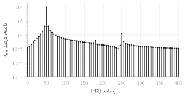
27.2.3 تجمیع، صدکِ ۹۵ و ارزیابیِ هفتگی
ایده. مقدارهای 200 ms در بازههای بلندتر (سهثانیه، دهدقیقه، دوساعته) با ریشهٔ میانگینِ مربعات تجمیع میشوند؛ ارزیابی معمولاً روی صدکِ ۹۵ مقدارهای دهدقیقهایِ یک هفته است:
a week of 10-minute 5th-harmonic voltages at the POC (A-338):
1,008 values: mean 1.17 %, 95th percentile 1.83 %, maximum 2.02 %
the 95th percentile ignores the highest 5 % (about 8 hours)
- the usual form of a weekly assessment; one high 10-minute
value is not a breach, a high percentile is
2-hour aggregation (12 values) raises nothing: max 1.73 %مثال 27.3 (یک مقدارِ بالا، تخلف نیست) پرسش. از ۱۰۰۸ مقدارِ دهدقیقهای، میانگین، صدکِ ۹۵ و بیشینه چیست؟
پاسخ. 1.17 %، 1.83 % و 2.02 %.
تفسیر. صدکِ ۹۵ بالاترین پنج درصد (حدودِ هشت ساعت) را کنار میگذارد؛ یک مقدارِ دهدقیقهایِ بالا تخلف نیست، صدکِ بالا هست. تجمیعِ دوساعته بیشینه را پایین میآورد (1.73 %)، چون اوجهای کوتاه را میانگین میکند. وارسی: \(0.05 \times 1{,}008 = 50\) مقدار.
- THD در 20 % توان وقتی TDD 1.6 % است؟
- چرا پنجره باید به فرکانسِ اندازهگیریشده قفل شود؟
- صدکِ ۹۵ چند مقدار از ۱۰۰۸ را کنار میگذارد؟
- چرا تجمیعِ دوساعته بیشینه را کم میکند؟
27.2.4 نامتعادلیِ ولتاژ
ایده. نامتعادلی نسبتِ ولتاژِ توالیِ منفی به مثبت است (\(u_2 = |V_2|/|V_1|\)؛ مؤلفههای متقارن در فصلِ ۲۶). نیروگاهِ مبدلی جریانِ متعادل میکشد و خودش کمی نامتعادلی میسازد؛ ولی مبدلهایش نامتعادلیِ شبکه را بهصورتِ ولتاژِ توالیِ منفی میبینند و کنترل و لینکِ DC آنها با موجکِ 100 Hz پاسخ میدهند:
voltage unbalance from three phase voltages (negative / positive):
phase magnitudes pu angles deg unbalance %
(1.0, 1.0, 1.0) (0, -120, 120) 0.00
(1.0, 0.98, 1.01) (0, -120, 120) 0.88
(1.0, 0.97, 1.0) (0, -121, 119.5) 0.87
a converter plant draws balanced currents and adds little
unbalance itself; but its converters see the network's
unbalance as a negative-sequence voltage, and their control
and DC links respond to it (ripple at 100 Hz) - the
unbalance at the POC is measured before and afterمثال 27.4 (دو درصد، نزدیک به یک درصد) پرسش. اگر ولتاژِ فازِ b 2 % کم و فازِ c 1 % زیاد باشد، نامتعادلی چقدر است؟
پاسخ. حدودِ 0.88 %.
تفسیر. نامتعادلی از دامنهها و زاویهها میآید؛ زاویههای کمی نابرابر هم همین اندازه میسازند. نامتعادلی در نقطهٔ اتصال پیش و پس از نیروگاه سنجیده میشود تا سهمِ نیروگاه جدا شود. وارسی: خروجیِ برنامه؛ در این مثال نامتعادلی حدودِ یکسومِ اختلافِ بیشترین و کمترین دامنه (3 %) است.
27.2.5 تغییرِ سریعِ ولتاژ و سوسو
ایده. وقتی ابر توانِ خورشیدی را میبرد، ولتاژ تغییر میکند: \(\Delta U/U \approx (\Delta P\,R + \Delta Q\,X)/U^2\). تغییرِ سریعِ ولتاژ یک پله است و سوسو (فلیکر؛ به انگلیسی flicker) لرزشِ تکرارشوندهای که چشم در نورِ لامپ میبیند؛ شدتِ آن با سوسوسنجِ استاندارد (Pst کوتاهمدت، Plt بلندمدت؛ STD-129) سنجیده میشود:
\[ \frac{\Delta U}{U} \approx \frac{\Delta P\,R + \Delta Q\,X}{U^2} \tag{27.2}\]
rapid voltage change when a cloud takes 30 MW of PV in a minute
bus (S_sc MVA, X/R) dU %, Q held Q to cancel Mvar
POC, strong (1,500, 8) -0.25 3.8
POC, weak (500, 5) -1.18 6.0
33 kV bus (365, 10) -0.82 3.0
a resistive grid feels active power, a reactive one the
reactive power: on a weak, resistive network a cloud is a
visible step; the converters' fast Q (lesson B) can cancel
it - the limit for rapid changes and flicker is the
operator's (the flicker report of the STD-130 family)مثال 27.5 (ابر روی شبکهٔ ضعیف) پرسش. افتِ 30 MW در یک دقیقه در نقطهٔ اتصالِ قوی (1,500 MVA، X/R ۸)، ضعیف (500 MVA، X/R ۵) و شینهٔ 33 kV چه تغییری میسازد و چه توانِ واکنشی آن را خنثی میکند؟
پاسخ. −0.25 %، −1.18 % و −0.82 %؛ برای خنثیکردن 3.8، 6.0 و 3.0 Mvar.
تفسیر. شبکهٔ مقاومتی توانِ فعال را حس میکند و شبکهٔ راکتیو توانِ واکنشی را؛ روی شبکهٔ ضعیف و مقاومتی، ابر یک پلهٔ دیدنی است. توانِ واکنشیِ سریعِ مبدلها (بخش 27.3.6) آن را خنثی میکند. حدِ تغییرِ سریع و سوسو را بهرهبردار میگذارد، با گزارشِ سوسوی همان خانوادهٔ STD-130. وارسی: \(\Delta Q = \Delta P \cdot R/X = 30/5 = 6\).
27.2.6 زنجیرهٔ اندازهگیری: چه چیزی را میتوان باور کرد
ایده. دستگاهِ کیفیتِ توان هر قدر دقیق باشد، از راهِ ترانسفورماتورهای ولتاژ و جریان میبیند؛ و اینها در بسامدهای هارمونیک رفتارِ دیگری دارند:
the measuring chain sets what can be trusted (concept):
element at harmonics use for harmonics
capacitive VT (CVT) resonant: wrong at harmonics no
inductive VT good to a few kHz voltages
protection CT core phase error, saturates no
metering CT core good to kHz, low burden currents
PQ instrument class of the method certificate, sync
a 132 kV bay often has only capacitive VTs: harmonic
voltages measured through them are wrong at the 5th and
beyond - the monitoring plan names the transducer, not only
the instrumentمثال 27.6 (CVT در بِیِ خط) پرسش. در بِیِ 132 kV فقط ترانسفورماتورِ ولتاژِ خازنی هست. هارمونیکِ ولتاژِ نقطهٔ اتصال را چگونه بسنجید؟
پاسخ. نه از راهِ CVT: تقسیمگرِ تشدیدیِ آن در هارمونیکها خطای بزرگ دارد. یا ترانسفورماتورِ القایی یا تقسیمگرِ مناسب لازم است، یا اندازهگیری در شینهٔ 33 kV با VTِ القایی و انتقال با مدل.
تفسیر. طرحِ پایش مبدل را نام میبرد، نه فقط دستگاه را (بخش 27.4.3). هستهٔ حفاظتیِ CT هم برای هارمونیک مناسب نیست؛ هستهٔ اندازهگیری با بارِ کم مناسبتر است. وارسی: هر ردیفِ جدول یک کاربرد دارد.
- نامتعادلیِ ولتاژ با فازِ b در 0.95 پریونیت؟
- افتِ 20 MW روی 500 MVA با X/R ۵ چه تغییری میسازد و چه توانِ واکنشی آن را خنثی میکند؟
- چرا CVT برای هارمونیک مناسب نیست؟
- سوسو و تغییرِ سریعِ ولتاژ چه فرقی دارند؟
27.2.7 فرورفتِ ولتاژ: جدولِ عمق و مدت
ایده. فرورفتِ ولتاژ (شکلِ کوتاهِ «افتِ کوتاهمدتِ ولتاژ» در فصلِ ۷؛ به انگلیسی voltage dip) کاهشِ کوتاهِ ولتاژ است، معمولاً از خطایی در شبکه که حفاظتش آن را پاک میکند. یک سالِ فرورفتها در جدولی از ولتاژِ باقیمانده و مدت خلاصه میشود؛ هر خانه با پوشِ عبور از خطا (فصلِ ۲۶) مقایسه میشود:
a year of voltage dips at the POC (synthetic, 40 events):
remaining voltage % 0.02-0.2 s 0.2-0.5 s 0.5-1 s 1-5 s
5 - 30 % 0 0 0 0
30 - 60 % 8 8 0 0
60 - 70 % 4 0 0 0
70 - 80 % 7 4 0 1
80 - 90 % 5 2 0 0
deepest dip leaves 39 % voltage; most dips are shallow and short
(faults on the network cleared by its protection): each
cell is compared with the ride-through envelope (ch 26) -
a plant that trips on dips the envelope covers fails its
requirement, and the dip table is the evidence of what the
network deliversمثال 27.7 (چهل رویداد، بیشترشان کوتاه) پرسش. از ۳۹ فرورفتِ ساختگی، ژرفترین چیست و چند تا کوتاهتر از 0.5 sاند؟
پاسخ. ژرفترین 39 % ولتاژ را باقی میگذارد؛ ۳۸ رویداد کوتاهتر از 0.5 s.
تفسیر. نیروگاهی که روی فرورفتهایی قطع کند که پوش آنها را میپوشاند، الزام را میشکند؛ جدولِ فرورفت شاهدِ آن چیزی است که شبکه میدهد و هر قطعِ نیروگاه با خانهٔ خودش مقایسه میشود. وارسی: جمعِ خانهها 39، چون یک رویدادِ ساختگی بیرون از ردیفهاست.
27.2.8 گذرای برقدار کردنِ صافی
ایده. برقدار کردنِ خازن یا صافی یک گذراست: ولتاژ با بسامدِ تشدیدِ شبکه و خازن (\(f \approx 50\sqrt{S_\text{sc}/Q}\)) نوسان میکند:
energising the 5 Mvar filter at the 33 kV bus (teaching):
ringing frequency ~ 50 x sqrt(S_sc / Q) = 367 Hz
rated current 87 A; inrush peak ~ sqrt2 x I x h = 908 A
bus voltage overshoot up to about 2 pu at the worst instant
(lightly damped); switching at voltage zero (controlled
switching) or a pre-insertion resistor keeps it near 1.1 pu
the transient is a power-quality event too: the operator's
limit for switching transients applies, and sensitive loads
nearby may notice itمثال 27.8 (سیصدوشصتوهفت هرتز) پرسش. برقدار کردنِ صافیِ 5 Mvar روی شینهٔ 365 MVA با چه بسامدی نوسان میکند و قلهٔ جریانِ هجومی چقدر است؟
پاسخ. حدودِ 367 Hz و 908 A در برابرِ 87 A نامی.
تفسیر. فراجهشِ ولتاژ در بدترین لحظه تا حدودِ دو پریونیت میرسد؛ کلیدزنیِ کنترلشده در صفرِ ولتاژ یا مقاومتِ پیشوصل آن را نزدیکِ 1.1 پریونیت نگه میدارد (فصلِ ۲۵ همین را برای ترانسفورماتور دید). گذرا هم رویدادِ کیفیتِ توان است و حدِ بهرهبردار برای آن به کار میرود. وارسی: \(50\sqrt{365/6.77} = 367\).
- فرورفت با 70 % ولتاژِ باقیمانده و 0.3 s در کدام خانه است؟
- بسامدِ گذرای برقدار کردنِ 3 Mvar خازن روی 365 MVA؟
- چرا کلیدزنیِ کنترلشده گذرا را کم میکند؟
27.2.9 سوسوی توربینها، سوسوی بلندمدت و THDِ ولتاژ
ضریبِ سوسو. سوسوی یک توربین در کارِ پیوسته با ضریبِ سوسو \(c\) از آزمونِ نوعی (STD-053) برآورد میشود: \(P_\text{st} \approx c\,S_\text{n}/S_\text{sc}\)؛ برای \(N\) توربینِ یکسان با جمعِ توانی \(\times\sqrt{N}\):
\[ P_{\text{st},\Sigma} \approx \frac{1}{S_\text{sc}}\sqrt{\sum_i \left(c_i\,S_{\text{n},i}\right)^2} \tag{27.3}\]
flicker of the 12 turbines by the flicker coefficient (teaching c = 5)
Pst of one turbine = c S_n / S_k; of N equal turbines x sqrt(N)
network S_k MVA one turbine twelve turbines
1500 0.018 0.064
600 0.046 0.159
300 0.092 0.318
the coefficient comes from the turbine's type test (the
measurement standard STD-053 defines it for grid angles and
wind speeds); summed over the farm it stays far below the
operator's planning level even on a weak network - wind
farms with modern converters rarely set flicker limitsمثال 27.9 (یکسوم حتی در شبکهٔ ضعیف) پرسش. سوسوی دوازده توربین با \(c = 5\) روی شبکهٔ 1,500 و 300 MVA؟
پاسخ. 0.064 و 0.318.
تفسیر. ضریب از آزمونِ نوعیِ توربین برای زاویههای شبکه و سرعتهای باد تعریف میشود؛ جمعِ مزرعه حتی روی شبکهٔ ضعیف بسیار زیرِ ترازِ برنامهریزیِ بهرهبردار میماند: مزرعههای بادیِ امروزی با مبدلِ کامل بهندرت حدِ سوسو را میسازند. وارسی: \(5 \times 5.5/300 \times 3.46 = 0.318\).
سوسوی بلندمدت. دوازده مقدارِ دهدقیقهایِ \(P_\text{st}\) با ریشهٔ سومِ میانگینِ مکعبها به \(P_\text{lt}\) دوساعته تبدیل میشوند:
\[ P_\text{lt} = \left(\frac{1}{12}\sum_{i=1}^{12} P_{\text{st},i}^3\right)^{1/3} \tag{27.4}\]
long-term flicker Plt from twelve 10-minute Pst values (2 hours)
Pst: 0.25 0.30 0.28 0.35 0.90 0.32 0.27 0.26 0.31 0.29 0.30 0.28
Plt = (sum Pst^3 / 12)^(1/3) = 0.438; mean Pst = 0.343
the cube weights the one high value (0.90, a switching
event) strongly: Plt sits above the plain mean - a rule
chosen so that short severe flicker is not averaged awayمثال 27.10 (مکعب، مقدارِ تند را نگه میدارد) پرسش. با یک \(P_\text{st}\) برابرِ 0.90 میانِ مقدارهای حدودِ 0.3، \(P_\text{lt}\) و میانگینِ ساده چیست؟
پاسخ. 0.438 و 0.343.
تفسیر. مکعب مقدارِ بالا را پررنگ میکند تا سوسوی کوتاه و شدید با میانگینگیری گم نشود. وارسی: \(0.9^3 = 0.729\) بیش از دو برابرِ جمعِ مکعبهای یازده مقدارِ دیگر (0.28).
THDِ ولتاژ. اعوجاجِ کلِ ولتاژ از هارمونیکهای جدا ساخته میشود؛ ولی کل ممکن است پنهان کند کدام مرتبه مشکل است:
voltage THD at the POC from the measured harmonics (teaching, % of U1)
h5: 1.83, h7: 0.90, h11: 0.50, h13: 0.40
THD_U = sqrt(sum U_h^2) = 2.14 %
a total can hide which order is the problem: the 5th holds
73% of the sum of squares here; limits and planning levels
are given per order as well as in totalمثال 27.11 (پنجم، سهچهارمِ کل) پرسش. با هارمونیکهای 1.83، 0.90، 0.50 و 0.40 %، THDِ ولتاژ و سهمِ پنجم چیست؟
پاسخ. 2.14 %؛ پنجم 73 % از جمعِ مربعات.
تفسیر. حدها و ترازهای برنامهریزی هم برای هر مرتبه و هم برای کل داده میشوند؛ گزارش هر دو را میآورد. وارسی: \(\sqrt{3.35 + 0.81 + 0.25 + 0.16} = 2.14\).
- سوسوی شش توربینِ 5.5 MVA با \(c = 8\) روی 600 MVA؟
- \(P_\text{lt}\) دوازده مقدارِ برابرِ 0.4؟
- THDِ ولتاژ با پنجمِ 2.0 و هفتمِ 1.5 %؟
27.2.10 ابرهارمونیکها و جریانِ مستقیمِ اینورترها
ابرهارمونیکها. مبدلها با بسامدِ کلیدزنیِ چند کیلوهرتز کار میکنند؛ مؤلفههای 2 تا 150 kHz را ابرهارمونیک (به انگلیسی supraharmonics) مینامند. جریانی که مبدل در شینهٔ 33 kV تزریق میکند میانِ راهِ شبکه (القایی، با بسامد بالا میرود) و ظرفیتِ خازنیِ کابلها (با بسامد پایین میآید) تقسیم میشود:
where a converter's high-frequency current goes (33 kV bus, teaching)
grid path (365 MVA, X/R 10) against the cable capacitance (1.77 Mvar):
series resonance near 718 Hz
frequency Hz share flowing to the grid
250 1.14
700 20.00
2500 0.09
5000 0.02
9000 0.01
near the resonance the grid share is amplified; above it the
switching frequencies (2-150 kHz, 'supraharmonics') circulate
between the converters, their own filter capacitors and the
cables - they rarely reach the POC but can disturb meters,
power-line signalling and other converters inside the plant;
they are measured with a different method and band grouping,
and only if the operator or the plant's own problems ask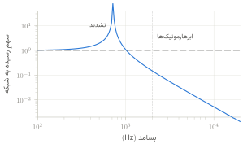
مثال 27.12 (در نیروگاه میماند) پرسش. در 2.5 kHz و 700 Hz چه سهمی از جریانِ تزریقشده به شبکه میرسد؟
پاسخ. حدودِ 0.09 در 2.5 kHz؛ در 700 Hz حدودِ ۲۰ برابر (تقویت در تشدیدِ سری، که فقط مقاومت محدودش میکند).
تفسیر. ابرهارمونیکها بیشتر میانِ مبدلها، خازنهای صافیِ خودشان و کابلها میچرخند؛ به نقطهٔ اتصال کم میرسند ولی ممکن است کنتورها، سیگنالدهی روی خطِ قدرت و مبدلهای دیگرِ درونِ نیروگاه را آشفته کنند. اندازهگیریِ آنها روش و دستهبندیِ بسامدیِ جداگانه دارد و فقط وقتی انجام میشود که بهرهبردار بخواهد یا مشکلی درونِ نیروگاه دیده شود. همان تشدیدِ نزدیکِ 700 Hz (مرتبهٔ ۱۴) همان است که اسکنِ امپدانس نشان داد (بخش 27.3.2). وارسی: \(50\sqrt{365/1.77} = 718\,\text{Hz}\) و \(1/|1 - (2500/718)^2| = 0.09\).
جریانِ مستقیم. اینورتر ممکن است جریانِ مستقیمِ کوچکی به خروجی بدهد. معیارِ درست برای سنجیدنش جریانِ مغناطیسکنندهٔ ترانسفورماتور است، نه جریانِ نامی:
DC current from an inverter against the unit transformer's magnetising
current (5.6 MVA, 600 V side: rated 5389 A; magnetising 0.3 %,
peak 23 A; teaching)
DC % of rated DC A DC / magnetising peak
0.10 5 0.2
0.25 13 0.6
0.50 27 1.2
1.00 54 2.4
a DC current that is 'only 0.5 % of rated' is larger than
the peak magnetising current: the core is biased into
saturation on one half-cycle - noise, heat and even
harmonics (2nd, 4th) in the measurement; even orders in
a spectrum are a clue for this or for a half-wave fault
(lesson C); the inverter's DC limit comes from its
type test and the transformer maker's toleranceمثال 27.13 (نیم درصد، بیش از کافی) پرسش. جریانِ مستقیمِ 0.5 % جریانِ نامیِ ترانسفورماتورِ 5.6 MVA در سمتِ 600 V با قلهٔ جریانِ مغناطیسکننده چه نسبتی دارد؟
پاسخ. 27 A در برابرِ 23 A: 1.2 برابر.
تفسیر. هسته در یک نیمچرخه به اشباع رانده میشود: صدا، گرما و هارمونیکهای زوج (دوم، چهارم). هارمونیکِ زوج در طیف سرنخی برای همین یا برای عیبِ نیمموج است (بخش 27.4.5). حدِ جریانِ مستقیمِ اینورتر از آزمونِ نوعیِ آن و رواداریِ سازندهٔ ترانسفورماتور میآید. وارسی: \(5.6 \times 10^6/(\sqrt{3} \times 600) = 5{,}389\,\text{A}\) و \(\sqrt{2} \times 5{,}389 \times 0.003 = 23\,\text{A}\).
- سهمِ رسیده به شبکه در 5 kHz؟
- با جریانِ مغناطیسکنندهٔ 0.5 %، جریانِ مستقیمِ 0.5 % چه نسبتی با قلهٔ آن دارد؟
- چرا هارمونیکهای زوج در طیفِ یک نیروگاهِ سالم کوچکاند؟
27.2.11 فرورفت از نقطهٔ اتصال تا پایانهٔ واحد
ایده. فرورفتی که در نقطهٔ اتصال اندازهگیری میشود همان نیست که پایانهٔ اینورتر یا توربین میبیند. ترانسفورماتورِ ستاره–مثلث مؤلفهٔ صفر را حذف میکند و ولتاژِ هر فاز در سمتِ دیگر از ولتاژِ خطبهخطِ سمتِ نخست ساخته میشود:
def through_delta(v: np.ndarray) -> np.ndarray:
"""Phase voltages (pu) on the far side of a delta-star or star-delta
transformer: line-to-line voltages of the near side / sqrt3 (the
30-degree shift does not change magnitudes; zero sequence is lost)."""
return np.array([v[0] - v[1], v[1] - v[2], v[2] - v[0]]) / math.sqrt(3)
def positive_seq(v: np.ndarray) -> float:
return abs((v[0] + A * v[1] + A * A * v[2]) / 3)a dip at the POC as seen further into the plant (magnitudes, pu)
case / place phase a phase b phase c pos. seq
single-phase fault (0.3 pu)
POC 132 kV (phase-earth) 0.30 1.00 1.00 0.77
33 kV bus (after YNd11) 0.68 1.00 0.68 0.77
unit 600 V (after Dyn) 0.91 0.91 0.53 0.77
phase-to-phase fault
POC 132 kV (phase-earth) 1.00 0.50 0.50 0.50
33 kV bus (after YNd11) 0.87 0.00 0.87 0.50
unit 600 V (after Dyn) 0.50 0.50 1.00 0.50
one deep phase at the POC becomes two moderate ones at
33 kV and one deeper one again at 600 V; a phase-to-phase
fault looks deeper at 33 kV (one phase at zero) than at
the POC; the positive sequence (what most converters
control) is the same at every level - a ride-through
check states which voltage it uses (lowest phase, line-
to-line or positive sequence) and whereمثال 27.14 (یک فازِ عمیق، دو فازِ متوسط) پرسش. خطای تکفاز ولتاژِ یک فاز را در نقطهٔ اتصال به 0.30 پریونیت میرساند. شینهٔ 33 kV و پایانهٔ 600 V چه میبینند؟
پاسخ. در 33 kV دو فاز 0.68 و یکی 1.00؛ در 600 V دو فاز 0.91 و یکی 0.53؛ دنبالهٔ مثبت در هر سه جا 0.77.
تفسیر. خطای فاز به فاز برعکس در 33 kV عمیقتر به نظر میرسد (یک فاز صفر). پس بررسیِ عبور از خطا باید بگوید با کدام ولتاژ (کمترین فاز، خطبهخط یا دنبالهٔ مثبت) و در کجا سنجیده میشود؛ مقایسهٔ رکوردِ نقطهٔ اتصال با رکوردِ واحد بدونِ این ترجمه به نتیجهٔ نادرست میرسد (بخش 27.2.7). وارسی: \(|0.3 - a^2|/\sqrt{3} = |0.8 + 0.866j|/1.732 = 0.68\).
خطاهای رایج.
- مقایسهٔ عمقِ فرورفت در دو سطحِ ولتاژ بی در نظر گرفتنِ گروهِ برداریِ ترانسفورماتورها.
- خواندنِ ولتاژِ فاز–زمین در سمتِ مثلث، جایی که زمین فقط از راهِ مقاومتِ زمینکردنِ نول تعریف میشود.
- فرضِ اینکه آزمونِ عبور از خطای سهفاز همهٔ انواعِ خطا را پوشش میدهد.
- خطای تکفاز با ولتاژِ باقیماندهٔ صفر در نقطهٔ اتصال: فازهای 33 kV؟
- چرا دنبالهٔ مثبت از ترانسفورماتور بیتغییر میگذرد ولی دنبالهٔ صفر نه؟
27.3 ب. علتها و پاسخهای نیروگاه
27.3.1 جمعِ هارمونیکِ ۲۶ واحد
ایده. هر واحد کمی جریانِ هارمونیک میدهد؛ جمعِ آنها به فازشان بستگی دارد. با نماییِ جمع \(\alpha\):
\[ I_h = \left(\sum_i I_{h,i}^{\alpha}\right)^{1/\alpha} \tag{27.5}\]
\(\alpha = 1\) یعنی همه همفاز (جمعِ دامنهها) و \(\alpha = 2\) یعنی فازهای تصادفی (جمعِ توانها):
def summation(currents, alpha: float) -> float:
"""Combined harmonic current of several sources with a summation
exponent alpha: alpha 1 adds magnitudes (in phase), alpha 2 adds
powers (random phases)."""
return float(sum(abs(c) ** alpha for c in currents) ** (1 / alpha))5th-harmonic current of the 26 units at the 33 kV side (teaching):
summation exponent 5th A % of plant current
all in phase 1.0 32.7 1.31
partly random 1.4 13.0 0.52
fully random 2.0 6.5 0.26
identical converters with the same control and the same
operating point emit low-order harmonics nearly in phase;
higher orders mix more randomly - the assessment report
(STD-130) uses summation exponents between these limits;
the in-phase sum is the safe first screening, the measured
plant emission replaces itمثال 27.15 (سیوسه یا شش آمپر) پرسش. هارمونیکِ پنجمِ ۲۶ واحد در سمتِ 33 kV با جمعِ همفاز، نیمهتصادفی و تصادفی چیست؟
پاسخ. 32.7، 13.0 و 6.5 A؛ 1.31 % تا 0.26 % جریانِ نیروگاه.
تفسیر. مبدلهای یکسان با کنترلِ یکسان و نقطهٔ کارِ یکسان هارمونیکهای پایین را تقریباً همفاز میدهند؛ هارمونیکهای بالاتر تصادفیتر جمع میشوند. گزارشِ ارزیابی (STD-130) نماهای جمعی میانِ این دو حد به کار میبرد؛ جمعِ همفاز غربالِ امنِ نخست است و گسیلِ اندازهگیریشدهٔ نیروگاه جایش را میگیرد. وارسی: \(26^{1/2} = 5.1\) و \(32.7/5.1 = 6.4\).
27.3.2 تشدید و اسکنِ فرکانسی
ایده. شبکه از دیدِ شینهٔ 33 kV یک القاگر است (\(X\) با بسامد بالا میرود) و کابلها خازن (\(X\) با بسامد پایین میآید). جایی که این دو برابر شوند تشدیدِ موازی است و امپدانسِ شینه بسیار بزرگ میشود: \(h_\text{r} \approx \sqrt{S_\text{sc}/Q_\text{C}}\). جریانِ هارمونیکِ کوچک در آن بسامد ولتاژِ بزرگی میسازد:
frequency scan of the 33 kV bus (grid 365 MVA, X/R 10, cables 1.77 Mvar;
no load damping in this teaching model, so the peaks are sharp):
case resonances at h at 5th ohm at 7th ohm
cables only 14.4 16.9 27.2
plus 5 Mvar capacitor bank 7.4 27.6 215.3
plus 5 Mvar filter at 4.7th 4.1, 16.7 4.2 15.5
the grid alone would show 2.98 ohm x h; cable capacitance makes a
parallel resonance near h = sqrt(365/1.77) = 14.4;
a plain capacitor bank for power factor pulls it down to the
7th, where the units emit: a 5th or 7th current there sees
many times the grid impedance - the classic trap; a filter
tuned below the 5th gives the same Mvar and a low impedance
at 5 and 7; it creates a new resonance below its tuning,
where the units emit little, and pushes the cable one up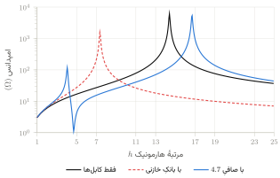
مثال 27.16 (تلهٔ کلاسیک) پرسش. تشدید با کابلها کجاست، و افزودنِ بانکِ خازنیِ 5 Mvar برای ضریبِ توان آن را کجا میبرد؟
پاسخ. 14.4 و 7.4؛ امپدانس در هفتم از 27 به 215 Ω میرود: حدودِ ده برابرِ امپدانسِ خودِ شبکه.
تفسیر. بانکِ خازنیِ ساده تشدید را درست به جایی میبرد که واحدها گسیل دارند. صافیِ تنظیمشده زیرِ پنجم همان مگاوار را میدهد و امپدانس را در ۵ و ۷ پایین نگه میدارد (4.2 و 15.5 Ω)؛ تشدیدِ تازهای زیرِ تنظیمش (4.1) میسازد، جایی که واحدها کم گسیل دارند. مدلِ آموزشی میراییِ بار ندارد، پس قلهها تیزند؛ اسکنِ واقعی در مطالعهٔ شبکه (فصلِ ۲۸) با بار و همهٔ حالتها انجام میشود. وارسی: \(\sqrt{365/6.77} = 7.34\).
27.3.3 صافیِ تنظیمشده
ایده. صافیِ تنظیمشدهٔ ساده (در کارگاه «فیلترِ هارمونیک»؛ به انگلیسی single-tuned filter) یک خازن و یک القاگرِ سری است که در بسامدِ تنظیم \(h_\text{t}\) امپدانسِ تقریباً صفر دارد و در 50 Hz توانِ واکنشی میدهد:
\[ \begin{aligned} X_C - X_L &= \frac{U^2}{Q} \\ X_L &= \frac{X_C}{h_\text{t}^2} \end{aligned} \tag{27.6}\]
def tuned_filter(q_mvar: float, h_tune: float, kv: float) -> tuple:
"""Single-tuned filter giving q_mvar at 50 Hz, tuned to h_tune:
returns (C in uF per phase, L in mH per phase, X_C and X_L at 50 Hz)."""
x_net = kv ** 2 / q_mvar # X_C - X_L at 50 Hz
xc = x_net * h_tune ** 2 / (h_tune ** 2 - 1)
xl = xc / h_tune ** 2
return 1e6 / (W50 * xc), 1e3 * xl / W50, xc, xlsingle-tuned filter: 5.0 Mvar at 33 kV, tuned to h = 4.7
X_C = 228.1 ohm, X_L = 10.33 ohm per phase (star equivalent)
C = 13.95 uF, L = 32.9 mH per phase
capacitor tolerance tuned to h
-5% 4.82
+0% 4.70
+5% 4.59
the capacitor sees 1.047 x the bus voltage at 50 Hz (the reactor's
rise), plus its harmonic duty: it is rated for both; tuned
a little below the 5th, the filter never sits exactly on a
harmonic even with tolerance and ageing (capacitance falls
with failed elements and the tuning rises toward the 5th)مثال 27.17 (چرا ۴٫۷ و نه ۵) پرسش. صافیِ 5 Mvar در 33 kV تنظیمشده روی 4.7: خازن و القاگر چیست، و رواداریِ ±5 % خازن تنظیم را کجا میبرد؟
پاسخ. 13.95 µF و 32.9 mH در هر فاز؛ تنظیم میانِ 4.59 و 4.82.
تفسیر. صافی کمی زیرِ پنجم تنظیم میشود تا با رواداری و پیری هرگز دقیقاً روی هارمونیک ننشیند؛ اگر بنشیند، هارمونیکِ پنجمِ کلِ شبکه را جذب و اضافهبار میشود. خازن 1.047 برابرِ ولتاژِ شینه را در 50 Hz میبیند (افزایشِ ولتاژ از القاگر) بهاضافهٔ وظیفهٔ هارمونیکی، و برای هر دو رتبه میگیرد. وارسی: \(33^2/5 = 217.8 = 228.1 - 10.33\).
- THD در توانِ کم با حدِ تمامبار مقایسه شده است.
- بانکِ خازنیِ ساده برای ضریبِ توان، بیاسکنِ فرکانسی، نصب شده است.
- صافی دقیقاً روی هارمونیک تنظیم شده است.
- جمعِ تصادفی برای هارمونیکهای پایینِ مبدلهای یکسان فرض شده است.
- ده منبعِ 2 A با \(\alpha = 1.4\)؟
- تشدید با 365 MVA و 3 Mvar؟
- صافیِ 3 Mvar در 33 kV با تنظیمِ 4.7: \(X_C\) و \(X_L\)؟
- ولتاژِ خازن در صافیِ تنظیمشده روی 4.7؟
27.3.4 مثالِ کارشدهٔ ۱: ضریبِ توان و جریان
ایده. برای همان توانِ فعال، ضریبِ توانِ کمتر جریانِ بیشتر میخواهد: \(I = P/(\sqrt{3}\,U\cos\varphi)\)؛ و تلفِ خط با مجذورِ جریان بالا میرود:
\[ I = \frac{P}{\sqrt{3}\,U\,\cos\varphi}, \qquad P_\text{loss} = 3 I^2 R \tag{27.7}\]
worked example 1: power factor and current at the POC (100 MW)
pf current A line loss kW reactive Mvar vs 437 A at pf 1
1.00 437 486 0.0 +0.0%
0.95 460 539 32.9 +5.3%
0.90 486 600 48.4 +11.1%
0.85 515 673 62.0 +17.6%
the same active power at pf 0.9 needs 11 % more current
and 23 % more line loss; on a hot, still day the line's
rating (ch 24: 419 A at 45 C and 0.6 m/s) is already below
437 A - every Mvar the plant is asked to export or absorb
at full power deepens the curtailment; the reactive
requirement and the line rating are read togetherمثال 27.18 (یازده درصد جریانِ بیشتر) پرسش. صادراتِ 100 MW در 132 kV با ضریبِ توانِ 1.0، 0.95، 0.90 و 0.85: جریان، تلفِ خطِ 0.847 Ω و توانِ واکنشی چیست؟
پاسخ. 437، 460، 486 و 515 A؛ تلف 486 تا 673 kW؛ توانِ واکنشی 0 تا 62 Mvar.
تفسیر. در ضریبِ توانِ 0.9 یازده درصد جریان و ۲۳ درصد تلفِ بیشتر. در روزِ گرم و آرام رتبهٔ خط (فصلِ ۲۴: 419 A در 45 °C و 0.6 m/s) از 437 A هم کمتر است: هر مگاواری که از نیروگاه در توانِ کامل خواسته شود محدودسازی را عمیقتر میکند؛ الزامِ توانِ واکنشی و رتبهٔ خط با هم خوانده میشوند. وارسی: \(100{,}000/(1.732 \times 132 \times 0.9) = 486\).
27.3.5 شبکهٔ ضعیف
ایده. نسبتِ اتصالِ کوتاه (\(\mathrm{SCR} = S_\text{sc}/P\)) نشان میدهد شبکه در برابرِ نیروگاه چقدر سخت است. هر چه ضعیفتر، هر مگاوار ولتاژ را بیشتر جابهجا میکند:
grid strength at the POC (short-circuit ratio SCR = S_sc / P_plant):
case S_sc MVA SCR dU per 10 Mvar %
normal (ch 17) 1500 15.0 0.66
one grid line out 600 6.0 1.65
weak corner 300 3.0 3.31
very weak 200 2.0 4.96
the weaker the grid, the more each Mvar moves the voltage:
controller gains tuned for SCR 15 can oscillate at SCR 3;
converters that follow the grid (a phase-locked loop) need
a voltage to lock on - at low SCR their own current moves
it, and interactions appear; the operator's weak-grid study
(ch 28) tests the plant's models at the weakest caseمثال 27.19 (SCRِ سه) پرسش. با 1,500، 600، 300 و 200 MVA، SCR و تغییرِ ولتاژ برای 10 Mvar چیست؟
پاسخ. SCR 15، 6، 3 و 2؛ تغییر 0.66، 1.65، 3.31 و 4.96 %.
تفسیر. بهرههای کنترلکنندهای که برای SCRِ ۱۵ تنظیم شده در SCRِ ۳ ممکن است نوسان کنند (فصلِ ۲۰). مبدلهایی که شبکه را دنبال میکنند (با حلقهٔ قفلِ فاز) به ولتاژی برای قفلشدن نیاز دارند؛ در SCRِ کم جریانِ خودشان آن را جابهجا میکند و برهمکنش پیدا میشود. مطالعهٔ شبکهٔ ضعیفِ بهرهبردار (فصلِ ۲۸) مدلهای نیروگاه را در ضعیفترین حالت میآزماید. وارسی: \(10 \times 0.99/300 = 3.3\,\%\).
27.3.6 توانِ واکنشی در نقطهٔ اتصال
ایده. واحدها در هر توانِ فعال توانِ واکنشیِ \(\sqrt{S^2 - P^2}\) دارند؛ ولی ترانسفورماتورها و خط بخشی از آن را مصرف میکنند (فصلِ ۲۵). الزام در نقطهٔ اتصال است:
reactive capability at the POC (S0: 22 units of 5.5 MVA; teaching):
P MW units Mvar transformers+line Mvar at POC Mvar pf at POC
10 120.6 0.1 120.5 0.083
25 118.4 0.8 117.6 0.208
50 110.2 3.1 107.1 0.423
75 95.0 6.9 88.0 0.649
100 68.1 12.3 55.8 0.873
at full power the units give 68 Mvar but the transformers
and the line take 12: about 56 Mvar reaches the POC - more
than a 0.95 requirement (33 Mvar) asks; the requirement is
checked at the POC with the losses in between, and at the
edges of the voltage band (ch 28), not at the terminals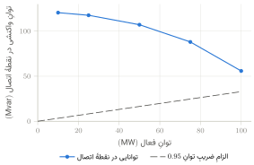
مثال 27.20 (شصتوهشت در پایانه، پنجاهوشش در نقطهٔ اتصال) پرسش. در 100 MW، واحدها و نقطهٔ اتصال چه توانِ واکنشی دارند و الزامِ 0.95 برآورده است؟
پاسخ. 68.1 و 55.8 Mvar؛ الزام 32.9 Mvar است: برآورده.
تفسیر. الزام در نقطهٔ اتصال با تلفهای میان سنجیده میشود و در لبههای بازهٔ ولتاژ (فصلِ ۲۸)، نه در پایانهها. در توانِ کم توانِ واکنشیِ زیادی هست، ولی برخی مبدلها در توانِ خیلی کم یا شب محدودیت دارند (دادهٔ سازنده). وارسی: \(\sqrt{121^2 - 100^2} = 68.1\).
- جریان و تلفِ خط در 100 MW و ضریبِ توانِ 0.8؟
- SCR با 800 MVA و 100 MW؟
- توانِ واکنشیِ واحدها در 90 MW از 121 MVA؟
- ضریبِ توانِ واقعی با ضریبِ جابهجاییِ 0.98 و THDِ جریانِ 10 %؟
27.3.7 گسیل در برابرِ تخصیص
ایده. بهرهبردار برای هر هارمونیک یک ترازِ برنامهریزی در شبکه دارد و آن را میانِ مشترکها تخصیص میدهد؛ رویکردِ گزارشِ ارزیابی (STD-130) سهمی متناسب با ظرفیتِ هر مشترک با نمای جمع میدهد. گسیلِ نیروگاه، جریانِ هارمونیک ضربِ امپدانسِ هارمونیکیِ نقطهٔ اتصال، با آن مقایسه میشود:
\[ \begin{aligned} E_{h,i} &\approx L_h \left(\frac{S_i}{S_t}\right)^{1/\alpha} \\ U_{h} &= I_h\,Z_h \approx I_h \cdot h\,\frac{U^2}{S_\text{sc}} \end{aligned} \tag{27.8}\]
the plant's 5th-harmonic emission against a teaching allocation
teaching planning level 3.0 %; plant 100 of 600 MVA of the
network's capacity; allocation ~ L x (S_i / S_t)^(1/alpha) = 0.83 %
plant 5th current 13.0 A at 33 kV -> 3.25 A at 132 kV
POC impedance at the 5th: 5 x 132^2 / 1,500 = 58.1 ohm
emission voltage 0.248 % - inside the allocation
the allocation method and its numbers are the operator's
(STD-130 describes the approach); a resonance near the 5th
would multiply the impedance and change the answer - so the
scan of lesson B comes firstمثال 27.21 (یکچهارم درصد در برابرِ هشتدهم) پرسش. با ترازِ برنامهریزیِ آموزشیِ 3 %، سهمِ 100 از 600 MVA و \(\alpha = 1.4\)، تخصیص چیست و گسیلِ پنجمِ نیروگاه چقدر است؟
پاسخ. تخصیص 0.83 %؛ گسیل حدودِ 0.25 %: درونِ تخصیص.
تفسیر. روش و عددهای تخصیص مالِ بهرهبردارند؛ گزارشِ ارزیابی فقط رویکرد را میدهد. تشدید نزدیکِ پنجم امپدانس را چند برابر و پاسخ را عوض میکند؛ پس اسکنِ بخش 27.3.2 نخست میآید (U-100). وارسی: \(3.25 \times 58.1/76{,}210 = 0.25\,\%\).
27.3.8 تقویتِ پسزمینه با تشدید
ایده. شبکه ولتاژِ هارمونیکیِ پسزمینه را پشتِ امپدانسِ خود میآورد. اگر شینه در آن بسامد امپدانسِ موازیِ بزرگی داشته باشد، ولتاژِ شینه بزرگتر از پسزمینه میشود، بیآنکه نیروگاه چیزی گسیل کند: \(U_\text{bus}/U_\text{bg} = Z_\text{bus}/Z_\text{grid}\):
background harmonics amplified at the 33 kV bus (teaching)
the grid brings a background voltage behind its impedance;
the bus voltage is that background times Z_bus / (h X)
order cables only with 5 Mvar capacitor with filter
5 1.13 1.85 0.28
7 1.30 10.31 0.74
11 2.39 0.81 1.24
13 5.39 0.47 1.82
with the plain capacitor the 7th background is amplified
about tenfold: 0.6 % upstream becomes some 6 % at the bus,
without the plant emitting anything - the complaint of
lab C could come from a capacitor, not from the converters
the filter attenuates the 5th and 7th below 1مثال 27.22 (ده برابر، بیگسیل) پرسش. پسزمینهٔ هفتمِ 0.6 % با بانکِ خازنیِ 5 Mvar و با صافی در شینه چه میشود؟
پاسخ. با بانکِ خازنی حدودِ ده برابر، نزدیکِ 6 %؛ با صافی 0.74 برابر، یعنی کمتر از پسزمینه.
تفسیر. شکایتِ بخش 27.4 ممکن است از یک خازن باشد، نه از مبدلها؛ گامِ پنجِ گردشِ کار (پایه و سابقهٔ کلیدزنی) همین را میآزماید. وارسی: \(10.31 \times 0.6 = 6.2\,\%\).
- تخصیص با سهمِ 50 از 600 MVA و همان تراز و \(\alpha\)؟
- امپدانسِ نقطهٔ اتصال در هارمونیکِ هفتم با 1,500 MVA؟
- چرا تقویتِ پسزمینه بیگسیلِ نیروگاه ممکن است؟
27.3.9 جریانِ هارمونیکِ نیروگاه کجا میرود؟
ایده. جریانِ هارمونیکی که واحدها تزریق میکنند میانِ شاخههای موازیِ شینه تقسیم میشود: شبکه، کابلها و صافی؛ هر شاخه به نسبتِ ادمیتانسش. نزدیکِ تشدید شاخهها با هم ناهمفازند و هر کدام میتواند بیش از کلِ جریان ببرد:
where the plant's 5th-harmonic current goes at the 33 kV bus (teaching;
magnitudes as % of the injected current - branches out of
phase with each other can each exceed 100 %)
case to the grid to the cables to the filter
no filter 114% 14% 0%
with filter 28% 3% 75%
without the filter all of it (and a little more, the cables
pushing against it) flows into the grid and makes a voltage
there; with it, most stays in the
plant - the filter must be rated for the plant's own 5th
AND the network's (lesson B, amplification), or it
overloadsمثال 27.23 (سهچهارم در صافی) پرسش. بیصافی و با صافی، چه سهمی از جریانِ پنجمِ نیروگاه به شبکه میرود؟
پاسخ. بیصافی 114 % (کابلها کمی خلافش میرانند)؛ با صافی 28 % و 75 % در صافی.
تفسیر. صافی بیشترِ جریانِ نیروگاه را درونِ نیروگاه نگه میدارد، ولی هارمونیکِ پنجمِ شبکه هم به آن میرسد (مثال 27.22)؛ پس برای هر دو رتبه میگیرد، وگرنه اضافهبار میشود (بخش 27.7.1). وارسی: با صافی، شاخهها تقریباً همفازند و جمعشان نزدیکِ صد درصد است.
- چرا بیصافی سهمِ شبکه از صد درصد بیشتر است؟
- صافی برای کدام دو جریانِ هارمونیک رتبه میگیرد؟
27.3.10 گسیل یا پاسخ؟ و توانایی در لبههای بازهٔ ولتاژ
گسیل یا پاسخ. جریانِ هارمونیکی که در پایانهٔ مبدل اندازهگیری میشود دو بخش دارد: گسیلِ خودِ مبدل، و جریانی که ولتاژِ هارمونیکِ پسزمینهٔ شبکه از راهِ صافیِ خروجیِ مبدل میراند (\(I = U_h/Z_h\)). اگر امپدانسِ هارمونیکیِ مبدل کم باشد، بیشترِ «گسیلِ» اندازهگیریشده پسزمینه است:
a converter's measured 5th current: its own emission plus the current
the grid's background 5th voltage drives into its filter (teaching)
background V5 % converter Z5 pu driven % measured % (random sum)
0.5 0.15 3.3 3.5
0.5 0.40 1.2 1.7
1.0 0.15 6.7 6.8
1.0 0.40 2.5 2.8
2.0 0.15 13.3 13.4
2.0 0.40 5.0 5.1
with a low-impedance output filter most of the 'emission'
measured at the terminals is the grid's background flowing
in: the converter acts as a sink, not a source; an emission
test is done with the background known (or measured before
and after), and the maker's harmonic impedance is part of
the evidenceمثال 27.24 (مبدل، مصرفکنندهٔ هارمونیک) پرسش. با گسیلِ خودِ مبدل 1.2 %، پسزمینهٔ 1 % و امپدانسِ پنجمِ 0.15 پریونیت، چه جریانی اندازهگیری میشود؟
پاسخ. حدودِ 6.8 %؛ 6.7 % از آن را پسزمینه میراند.
تفسیر. مبدل اینجا جاذب است، نه منبع. آزمونِ گسیل با پسزمینهٔ معلوم (یا پیش و پس) انجام میشود و امپدانسِ هارمونیکیِ سازنده جزءِ شاهد است؛ این همان دامِ گامِ چهارمِ بررسی است (بخش 27.4.1). وارسی: \(1/0.15 = 6.7\) و \(\sqrt{1.2^2 + 6.7^2} = 6.8\).
توانایی در لبههای بازهٔ ولتاژ. واحدها حدِ جریان دارند؛ پس توانِ ظاهریشان با ولتاژ تغییر میکند و در ولتاژِ کم توانِ واکنشیِ کمتری میماند:
reactive capability at full power across the voltage band
(units current-limited: apparent power scales with voltage)
voltage pu units S MVA units Q at 100 MW Mvar
0.90 108.9 43.1
0.95 114.9 56.7
1.00 121.0 68.1
1.05 127.1 78.4
1.10 133.1 87.8
at 0.9 pu the units give 43 Mvar instead of 68 - just when
a low voltage asks for more; the requirement is checked at
the band's edges; a capability chart drawn at 1.0 pu
promises too much at low voltage (ch 28 tests the corners)مثال 27.25 (درست وقتی لازم است، کمتر) پرسش. در توانِ کامل، توانِ واکنشیِ واحدها در 0.90 و 1.00 پریونیت ولتاژ چیست؟
پاسخ. 43.1 و 68.1 Mvar.
تفسیر. در ولتاژِ کم، درست وقتی شبکه توانِ واکنشیِ بیشتری میخواهد، توانایی کم میشود؛ نمودارِ توانایی که در 1.0 پریونیت کشیده شده در ولتاژِ کم بیش از توان وعده میدهد. الزام در لبههای بازه وارسی میشود (فصلِ ۲۸). وارسی: \(\sqrt{108.9^2 - 100^2} = 43.1\).
- جریانِ اندازهگیریشده با پسزمینهٔ 0.5 % و امپدانسِ 0.40؟
- توانِ واکنشیِ واحدها در 0.95 پریونیت و 80 MW؟
27.3.11 نوسانِ 3p توربینها و کنترلِ Q(U)
نوسانِ 3p. هر بار که پره از جلوی برج میگذرد، توانِ توربین کمی افت میکند: با سه پره، بسامدِ «3p» سه برابرِ بسامدِ چرخش است. دوازده توربین با فازهای تصادفی:
the turbines' 3p power modulation (tower passage) at the POC (teaching)
rotor rpm 3p Hz 12 turbines, 2 % each, random phases: dP MW dU %
8 0.40 0.35 0.003
12 0.60 0.35 0.003
14 0.70 0.35 0.003
the eye is most sensitive to lamp flicker near 8.8 Hz and
much less below 1 Hz; three thousandths of a per cent at
0.4-0.7 Hz is far below anything a flickermeter would rank
(STD-129) - which is why the flicker coefficient (lesson
A) of modern turbines is small; synchronised turbines (all
in phase) would add linearly - the sqrt(12) assumes they
are notمثال 27.26 (سه هزارم درصد) پرسش. با 2 % نوسان در هر توربین و فازهای تصادفی، تغییرِ ولتاژِ نقطهٔ اتصال در 3p چقدر است؟
پاسخ. حدودِ 0.003 % در 0.4 تا 0.7 Hz.
تفسیر. چشم در حدودِ 8.8 Hz بیشترین حساسیت را به لرزشِ نورِ لامپ دارد و زیرِ یک هرتز بسیار کمتر؛ این دامنه بسیار زیرِ هر چیزی است که سوسوسنج رتبه بدهد (STD-129). اگر توربینها همفاز میشدند، بهجای \(\sqrt{12}\) خطی جمع میشدند. وارسی: \(5 \times 0.02 \times 3.46 = 0.35\,\text{MW}\).
کنترلِ Q(U) و پراکندگیِ ولتاژ. با مشخصهٔ Q(U)، نیروگاه با بالا رفتنِ ولتاژ جذب و با پایین آمدنش تولید میکند. در مدلِ شبهماندگار، انحرافِ ولتاژِ شبکه با ضریبِ \(1/(1 + k/\mathrm{SCR})\) کوچک میشود:
voltage at the POC over a week with and without Q(U) control
(grid voltage wandering; SCR 15; teaching quasi-steady model)
case 5th pct 95th pct spread pu
no voltage control 0.944 1.003 0.059
Q(U) 33 Mvar per 5 % 0.961 1.002 0.041
with SCR 15 the plant's reactive power moves the POC voltage
modestly: Q(U) narrows the spread by about a third; on a
weaker grid the same droop does more, and its gain must be
checked for stability there (lesson B, weak grid)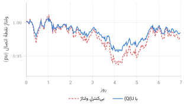
مثال 27.27 (یکسوم کمتر) پرسش. پراکندگیِ ولتاژ (صدکِ ۵ تا ۹۵) با و بی Q(U) چیست؟
پاسخ. 0.059 و 0.041 پریونیت: حدودِ یکسوم کمتر.
تفسیر. با SCRِ ۱۵ توانِ واکنشیِ نیروگاه ولتاژ را متوسط جابهجا میکند؛ در شبکهٔ ضعیفتر همان شیب کارِ بیشتری میکند و بهرهاش باید برای پایداری وارسی شود (بخش 27.3.5). وارسی: \(1/(1 + 6.6/15) = 0.69\).
- بسامدِ 3p برای روتورِ 10 rpm؟
- کاهشِ پراکندگی با همان شیب در SCRِ ۵؟
27.3.12 علامتِ ضریبِ توان و نقطهٔ کنترلِ ولتاژ
علامتها. در قراردادِ مولد در نقطهٔ اتصال (D-010)، \(P > 0\) یعنی صادرات و \(Q > 0\) یعنی نیروگاه توانِ واکنشی میدهد. واژههای «پسفاز» و «پیشفاز» اما با سمت و قرارداد معنا عوض میکنند:
power factor and its sign under the generator convention (D-010:
P > 0 export; Q > 0 the plant supplies reactive power)
P MW Q Mvar pf plant is usual name
80 20 0.970 exporting, giving Q lagging (overexcited)
80 -20 0.970 exporting, taking Q leading (underexcited)
-15 5 0.949 importing, giving Q leading load
-15 -5 0.949 importing, taking Q lagging load
the same plant giving reactive power is 'lagging' as a
generator and a 'leading load' when it imports (charging):
the words change with the side and the convention - a
report states P and Q with their signs and the convention,
never 'pf 0.97' aloneمثال 27.28 (یک ضریبِ توان، چهار وضع) پرسش. چهار وضعِ جدول همه ضریبِ توانِ نزدیکِ 0.95 تا 0.97 دارند. چرا گزارشِ «ضریبِ توانِ 0.97» بهتنهایی کافی نیست؟
پاسخ. چون همان عدد هم برای نیروگاهی که توانِ واکنشی میدهد درست است و هم برای نیروگاهی که میگیرد؛ و نیروگاهی که در شبِ شارژِ باتری وارد میکند و توانِ واکنشی میدهد، از دیدِ شبکه «بارِ پیشفاز» است.
تفسیر. گزارش \(P\) و \(Q\) را با علامت و قرارداد میدهد، و الزامِ بهرهبردار هم باید به همین زبان نوشته شود (بخش 27.3.4)؛ یک علامتِ وارونه در فایلِ تنظیماتِ کنترلکننده نیروگاه را درست برخلافِ خواستهٔ شبکه میبرد. وارسی: \(80/\sqrt{80^2 + 20^2} = 0.970\) و \(15/\sqrt{15^2 + 5^2} = 0.949\).
نقطهٔ کنترل. کنترلکنندهٔ نیروگاه ولتاژ را جایی اندازه میگیرد؛ الزام اما در نقطهٔ اتصال است. میانِ شینهٔ 132 kV نیروگاه و نقطهٔ اتصال، خطِ 7.06 km افتِ ولتاژی میسازد که به \(P\) و \(Q\) بستگی دارد (همان شکلِ معادلهٔ 27.2):
voltage at the plant's 132 kV bus against the POC (100 MW, 7.06 km line)
Q at the POC Mvar bus above POC %
-33 -0.05
0 0.49
33 1.02
the controller that measures at the plant bus sees a
voltage up to a per cent away from the POC's: the voltage
set-point is either measured at the POC (remote signal)
or corrected for the line (line-drop compensation) - the
requirement is at the POC, wherever the controller reads
(lesson E, location)مثال 27.29 (یک درصد دورتر) پرسش. در 100 MW صادرات و 33 Mvar توانِ واکنشیِ دادهشده، ولتاژِ شینهٔ نیروگاه چقدر بالاتر از نقطهٔ اتصال است؟
پاسخ. حدودِ 1.02 %؛ با 33 Mvar جذب تقریباً صفر.
تفسیر. کنترلکنندهای که در شینهٔ نیروگاه اندازه میگیرد ولتاژی تا یک درصد دور از نقطهٔ اتصال میبیند؛ نقطهٔ تنظیم یا با سیگنالِ دور از خودِ نقطهٔ اتصال اندازهگیری میشود یا برای خط جبران میشود (جبرانِ افتِ خط). محلِ اندازهگیری در آزمونِ پلهٔ ولتاژ (بخش 27.6.1) و در فایلِ تنظیمات ثبت میشود. وارسی: \((0.12 + 0.33 \times 0.40) \times 7.06/174.24 = 1.02\,\%\).
- نیروگاه −10 MW و −3 Mvar: صادر یا وارد، توانِ واکنشی میدهد یا میگیرد؟
- اختلافِ ولتاژِ شینه و نقطهٔ اتصال در 50 MW و 0 Mvar؟
27.3.13 سیگنالِ کنترلِ ریپل و نامتعادلیِ خط
سیگنالِ کنترلِ ریپل. برخی شبکهها برای فرمان به گیرندهها (مثلاً روشن و خاموش کردنِ بار) سیگنالی با بسامدِ میانهارمونیک روی ولتاژ میگذارند. صافیِ هارمونیکِ نیروگاه، دیدهشده از سمتِ 132 kV، با ترانسفورماتورِ اصلی سری است؛ القای ترانسفورماتور تشدیدِ سریِ صافی را پایین میآورد:
a ripple-control signal against the plant's 5th-harmonic filter
filter alone: series resonance at h 4.70; seen from the 132 kV side
through the main transformer (X 2.07 ohm at 50 Hz): h 4.29
signal Hz h impedance from 132 kV side ohm (33 kV base)
183.3 3.67 16.8
216.7 4.33 1.6
316.7 6.33 42.6
1050.0 21.00 249.6
a teaching signal at 216.7 Hz meets an impedance of a few
ohms: the filter sinks the operator's signal and the
receivers nearby may miss their commands; the signal
frequencies used in the network belong in the filter's
design data (a blocking circuit or another tuning), and
the filter is checked from the side the signal comes fromمثال 27.30 (صافیای که سیگنال را میبلعد) پرسش. تشدیدِ سریِ صافی از سمتِ 132 kV در چه مرتبهای است و سیگنالِ آموزشیِ 216.7 Hz چه امپدانسی میبیند؟
پاسخ. مرتبهٔ 4.29؛ حدودِ 1.6 اهم (بر پایهٔ 33 kV).
تفسیر. صافیای که برای پنجم طراحی شده، سیگنالِ بهرهبردار را میبلعد و گیرندههای نزدیک ممکن است فرمانشان را نگیرند. بسامدهای سیگنال در شبکه جزءِ دادهٔ طراحیِ صافیاند (مدارِ سدکننده یا تنظیمِ دیگر)، و صافی از سمتی وارسی میشود که سیگنال از آن میآید (بخش 27.3.3). وارسی: \(\sqrt{228.1/(10.33 + 2.07)} = 4.29\).
نامتعادلی از خط. خطِ بیجابهجاییِ فاز (به انگلیسی untransposed) امپدانسهای نابرابر دارد و با جریانِ مثبت ولتاژِ منفی میسازد:
unbalance caused by an untransposed 132 kV line at full current
(negative-sequence coupling 0.03 ohm/km, teaching)
line km V2 V unbalance %
7.06 93 0.12
30.00 393 0.52
70.00 918 1.20
Plant P's short line adds almost nothing; a long untransposed
line adds unbalance in proportion to its length and current,
and the plant's own converters (which control positive
sequence) see it as a background they did not causeمثال 27.31 (خطِ کوتاه، اثرِ کوچک) پرسش. نامتعادلیِ افزوده در جریانِ کاملِ 437 A برای خطِ 7.06 و 70 km؟
پاسخ. 0.12 % و 1.20 %.
تفسیر. خطِ کوتاهِ نیروگاهِ P تقریباً چیزی نمیافزاید؛ خطِ بلند به نسبتِ طول و جریان میافزاید، و مبدلهای نیروگاه که دنبالهٔ مثبت را کنترل میکنند آن را پسزمینهای میبینند که خودشان نساختهاند (بخش 27.2.4). وارسی: \(0.03 \times 70 \times 437 = 918\,\text{V}\) و \(918/76{,}210 = 1.20\,\%\).
- اگر ترانسفورماتور X برابرِ 3.0 اهم داشت، تشدیدِ سری از سمتِ 132 kV؟
- نامتعادلیِ افزوده برای خطِ 30 km در نیمِ جریان؟
27.3.14 تشدیدی که با شمارِ واحدها جابهجا میشود و هارمونیکِ تابلوی کمکی
تشدیدِ متحرک. هر مبدل در صافیِ خروجیِ خود خازن دارد. با هر واحدی که به مدار میآید، ظرفیتِ خازنیِ شینهٔ 33 kV بیشتر و مرتبهٔ تشدید (\(h_\text{r} \approx \sqrt{S_\text{sc}/Q_C}\)) پایینتر میشود:
the 33 kV resonance against converters online (cables 1.77 Mvar,
0.15 Mvar of filter capacitance per converter; grid 365 MVA, X/R 10)
online C Mvar resonance h amplification at 11th at 13th
0 1.77 14.36 2.4 5.4
3 2.22 12.82 3.7 41.5
8 2.97 11.09 45.1 2.7
16 4.17 9.36 2.7 1.1
26 5.67 8.02 1.1 0.6
the resonance falls from the 14th (nothing online) to the
8th (all 26 online); with about 3 units online it sits on
the 13th and with about 8 on the 11th - low-output hours
with few units running are the risky ones, so the scan is
run for every unit count, not only 'all online'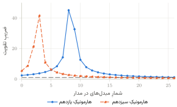
مثال 27.32 (خطرناکترین ساعتها، کمکارترینها) پرسش. با چند واحدِ در مدار تشدید روی مرتبهٔ ۱۱ و ۱۳ میافتد، و تقویت در آنجا چقدر است؟
پاسخ. حدودِ ۸ واحد برای ۱۱ (تقویتِ 45)، حدودِ ۳ واحد برای ۱۳ (تقویتِ 41)؛ با همهٔ ۲۶ واحد تشدید در مرتبهٔ 8.0 است.
تفسیر. ساعتهای کمتولید با چند واحدِ روشن (صبحِ کمباد، غروب) پرخطرترند، نه توانِ کامل. اسکنِ امپدانس برای هر شمارِ واحد اجرا میشود، نه فقط «همه در مدار» (بخش 27.3.2)؛ و در بررسیِ یک شکایت، شمارِ واحدهای روشن در آن ساعت از دادهٔ اسکادا خوانده میشود (بخش 27.4.1). وارسی: \(\sqrt{365/(1.77 + 8 \times 0.15)} = 11.1\).
تابلوی کمکیِ 400 V. درایوهای تهویهٔ نیروگاه جریانِ هارمونیکی میکشند و ولتاژِ تابلوی تغذیهٔ کنترلها را از راهِ امپدانسِ ترانسفورماتورِ تغذیهٔ داخلی اعوجاج میدهند (\(U_h \approx I_h\,h\,u_k\)):
voltage THD on the 400 V auxiliary board fed by the 250 kVA station
transformer (uk 4 %) from the HVAC drives (current % of fundamental)
drive type drives kW voltage THD %
6-pulse, no choke 60 5.0
6-pulse, no choke 160 13.4
6-pulse, DC choke 60 2.4
6-pulse, DC choke 160 6.5
active front end 60 0.3
active front end 160 0.7
the plant's own drives distort its own control supply: a
PQ question inside the fence, separate from the POC; the
drive type is chosen with the board's short-circuit level
(ch 23), and the battery HVAC of S1 makes it largerمثال 27.33 (پرسشی درونِ حصار) پرسش. با 160 kW درایوِ ششپالسِ بیچوک، THDِ ولتاژِ تابلو چقدر است و با یکسوسازِ فعال؟
پاسخ. 13.4 % و 0.7 %.
تفسیر. درایوهای خودِ نیروگاه تغذیهٔ کنترلِ خودش را آشفته میکنند: مسئلهٔ کیفیتِ توانِ درونِ حصار، جدا از نقطهٔ اتصال. نوعِ درایو با ترازِ اتصالِ کوتاهِ تابلو (فصلِ ۲۳) انتخاب میشود؛ تهویهٔ باتری در S1 بارِ بزرگتری است که تغذیهٔ جداگانه میخواهد (فصلِ ۲۵). وارسی: پنجمِ بیچوک \(0.64 \times 0.70 \times 5 \times 0.04 = 9.0\,\%\).
- مرتبهٔ تشدید با ۱۲ واحدِ در مدار؟
- THDِ ولتاژ با 100 kW درایوِ دارای چوکِ DC (تقریبی)؟
- چرا تقویت با همهٔ واحدها در سیزدهم کمتر از یک است؟
27.4 پ. گردشِ کارِ بررسی
27.4.1 از شکایت تا اقدامِ اصلاحی
ایده. شکایتِ کیفیتِ توان («خازنهای ما در عصر فیوز میسوزانند») یک نشانه است، نه یک علت. گردشِ کارِ بررسی شش گام دارد و هر گام با یک سابقه بسته میشود؛ نتیجهای که گامِ ۴ را نادیده بگیرد، آخرین چیزی را که وصل شده مقصر میداند:
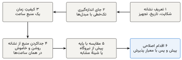
investigation of a power-quality complaint (fictional, A-338):
1 define the symptom: neighbour's capacitor fuses blow in the evening
record: complaint record, dates, equipment
2 measurement location: POC, the neighbour's bus, plant 33 kV bus
record: single-line with transducers
3 time quality: all instruments on one clock source
record: time-sync record, clock offsets
4 separate source from symptom: same hours with plant on and off
record: on/off comparison, currents
5 compare with a baseline: before the plant, or a similar bus
record: baseline data set
6 corrective action: filter, settings, or not the plant
record: before/after with acceptance
each step ends in a record; a conclusion that skips step 4
blames whatever was connected lastمثال 27.34 (نخستین مظنون) پرسش. نیروگاه سه ماه پیش وصل شد و همسایه از سوختنِ فیوزِ خازن در عصر شکایت دارد. چرا نتیجهٔ «نیروگاه مقصر است» زود است؟
پاسخ. چون گامِ ۴ (جداکردنِ منبع از نشانه با مقایسه در همان ساعتها و همان وضعِ شبکه) و گامِ ۵ (پایه) انجام نشدهاند. عصر، تولیدِ خورشیدی کم است؛ اوجِ عصرگاهی ممکن است از بارِ شبکه یا کلیدزنیِ خازنهای دیگر باشد.
تفسیر. نیروگاه ممکن است سهمی داشته باشد (بخش 27.5)؛ ولی سهم با سابقه ثابت میشود، نه با زمانِ اتصال. وارسی: شش گام، شش سابقه.
27.4.2 جهتِ «توانِ هارمونیکی»: یک سرنخ، نه حکم
ایده. گاهی جهتِ توانِ هارمونیک \(P_h = V_h I_h \cos\theta_h\) برای یافتنِ منبع به کار میرود. ولی خطای فازِ مبدلها در بسامدهای هارمونیک چند درجه است، و نزدیکِ 90° یک خطای کوچک علامت را برمیگرداند:
sign of the 5th-harmonic power P5 = V5 I5 cos(theta) under a
+/- 10 deg phase error of the transducers at the 5th (teaching):
true theta deg P5 sign sign with errors conclusive?
30 + + yes
60 + + yes
80 + + yes
88 + + or - NO
95 - + or - NO
near 90 degrees a small phase error flips the sign: the
'direction of harmonic power' points the finger only when
the angle is far from 90 degrees and the transducers are
known at the 5th; otherwise it is one clue among several,
never the verdictمثال 27.35 (هشتادوهشت درجه) پرسش. با زاویهٔ واقعیِ 88° و خطای ±10°، علامتِ \(P_5\) چه میگوید؟
پاسخ. هیچ: میتواند مثبت یا منفی باشد.
تفسیر. جهتِ توانِ هارمونیکی فقط وقتی انگشت را نشانه میرود که زاویه از 90° دور باشد و مبدلها در هارمونیکِ پنجم شناخته باشند؛ وگرنه یک سرنخ میانِ چند سرنخ است. وارسی: \(\cos 78^\circ > 0\) و \(\cos 98^\circ < 0\).
27.4.3 طرحِ اندازهگیری
ایده. پیش از نخستین قرائت، روی کجا، چه، با کدام مبدل و چه مدت با بهرهبردار و همسایه توافق میشود:
measurement plan for the investigation (teaching):
POC 132 kV: V harmonics, flicker, unbalance
through inductive VT or divider, for 4 weeks
POC 132 kV: I harmonics, P, Q
through metering CT core, for 4 weeks
33 kV bus A and B: V and I harmonics
through VT, CT, for 4 weeks
one PV and one wind unit: I harmonics vs power
through unit transducers, for 2 weeks
neighbour's bus: V harmonics
through their VT, agreed, for 4 weeks
class A instruments on the method of STD-034, one time
source, 10-minute aggregation, plant output and switching
log recorded alongside; the plan is agreed with the
operator and the neighbour before the first readingمثال 27.36 (چهار هفته، یک ساعت) پرسش. چرا طرح دستکم چهار هفته و یک منبعِ زمان دارد؟
پاسخ. چهار هفته روزهای کاری و تعطیل و حالتهای گوناگونِ شبکه را میپوشاند و صدکِ هفتگی را چند بار میدهد؛ یک منبعِ زمان مقایسهٔ قرائتهای چند جا را ممکن میکند (فصلِ ۲۶، ساعتها).
تفسیر. دستگاهها از ردهٔ A روشِ اندازهگیری (STD-034) هستند؛ تولیدِ نیروگاه و سابقهٔ کلیدزنی کنارِ آنها ثبت میشود. وارسی: هر ردیف جا، کمیت، مبدل و مدت دارد.
- شش گامِ بررسی و سابقهٔ هر کدام را بنویسید.
- علامتِ \(P_5\) با زاویهٔ 85° و خطای ±10°؟
- چرا طرحِ اندازهگیری پیش از نخستین قرائت توافق میشود؟
27.4.4 همترازکردنِ ساعتِ دستگاهها
ایده. گامِ سومِ گردشِ کار کیفیتِ زمان است. اگر ساعتِ دستگاهِ کیفیتِ توان با SCADA اختلاف داشته باشد، هر مقایسه با تولیدِ نیروگاه تار میشود. با همبستگیِ متقابل (فصلِ ۱۲) جابهجاییِ زمانی پیدا میشود: سریای که هر دو دستگاه دارند، مثلاً توانِ فعال، مرجع است:
aligning a PQ instrument with SCADA by cross-correlation
the instrument's 10-minute active power against SCADA's,
shifted by up to +/- 2 hours: best lag 3 samples = 30 minutes
the instrument's clock was set wrong by half an hour; every
comparison with plant output (lab D) would be blurred by
it - align first, then compare; and record the offset and
how it was found in the investigation fileمثال 27.37 (نیم ساعت) پرسش. بهترین جابهجایی میانِ توانِ اندازهگیریشده با دستگاه و SCADA چیست؟
پاسخ. سه نمونهٔ دهدقیقهای: 30 دقیقه.
تفسیر. نخست همترازی، سپس مقایسه؛ جابهجایی و روشِ یافتنش در پروندهٔ بررسی ثبت میشود. بهتر آن است که دستگاهها از آغاز یک منبعِ زمان داشته باشند (بخش 27.4.3). وارسی: \(3 \times 10 = 30\).
- چرا توانِ فعال سریِ مرجعِ خوبی برای همترازی است؟
- اگر دو دستگاه هیچ سریِ مشترکی نداشتند، چه میکردید؟
27.4.5 خانوادههای علتِ ریشهای
ایده. بررسیِ خوب همهٔ خانوادههای علت را باز نگه میدارد تا شاهدِ هر کدام آن را ببندد؛ نه فقط آنچه نخست مظنون بود:
root-cause families for a power-quality complaint (teaching)
network: capacitor switching, resonance, other emitters
evidence: switching log, scan
plant: converter emission, filter detuned, settings
evidence: currents, unit bins
measurement: CVT error, clock offset, wrong window
evidence: transducer data
load: neighbour's capacitors, drives
evidence: their records
operation: new firmware, changed set-point
evidence: configuration log
every family stays open until its evidence closes it - the
investigation report lists all five, not only the one
that was suspected firstمثال 27.38 (پنج خانواده، پنج سابقه) پرسش. برای شکایتِ عصرگاهیِ بخش 27.4، هر خانوادهٔ علت با کدام شاهد بسته میشود؟
پاسخ. شبکه: سابقهٔ کلیدزنی و اسکن (مثال 27.22)؛ نیروگاه: جریانها و گسیلِ بازهای (مثال 27.43)؛ اندازهگیری: دادهٔ مبدل و ساعت (مثال 27.6، مثال 27.37)؛ بار: سوابقِ همسایه؛ بهرهبرداری: سابقهٔ پیکربندی (فصلِ ۲۶).
تفسیر. گزارشِ بررسی همهٔ پنج خانواده را با وضعِ هر کدام (بسته، باز، نیازمندِ شاهد) فهرست میکند. وارسی: هر خانواده یک شاهد دارد.
27.4.6 گزینههای اصلاحِ تشدید، سنجیده در بدترین حالت
ایده. وقتی بررسی تشدیدِ متحرک را علتِ شکایت میشناسد (مثال 27.32)، گزینههای اصلاح سنجیده میشوند. هر گزینه با بدترین شمارِ واحد و بدترین مرتبه داوری میشود، نه با حالتِ «همه در مدار» یا مرتبهای که هدف گرفته است. امپدانسِ شینه با همهٔ اجزا:
def z_bus(h: float, n_units: int, filters=(), g_unit: float = 0.0) -> complex:
"""Impedance (ohm) at the 33 kV bus at order h: grid, cables, the
converters' capacitors, tuned filters (q_mvar, h_tune, quality) and an
optional damping conductance per converter (MW per unit at h)."""
n = src.NET
kv = n["kv_33"]
x1 = kv ** 2 / n["s_sc_33"] / math.sqrt(1 + 1 / n["xr_33"] ** 2)
y = 1 / complex(x1 / n["xr_33"], x1 * h)
y += 1j * h * (n["q_cables"] + n_units * Q_UNIT) / kv ** 2
y += n_units * g_unit / kv ** 2
for q_f, h_t, qual in filters:
xc = kv ** 2 / q_f * h_t ** 2 / (h_t ** 2 - 1)
xl = xc / h_t ** 2
y += 1 / complex(xl * h_t / qual, xl * h - xc / h)
return 1 / yremedies for the resonance (worst over 0-26 units online and over
the 5th, 7th, 11th and 13th)
option worst amplification units order cost k u
as built (5th filter out) 45.1 8 11 0
5th filter switched in 36.2 16 11 0
damped 11th filter 2 Mvar 4.5 21 7 450
converter active damping 24.3 3 13 60
every remedy is judged by its WORST unit count and order,
not by the all-online case or the order it targets;
switching the 5th filter in moves the peak but does not
remove it; the damped 11th filter flattens the 11th but
leaves a smaller peak at the 7th; active damping grows
with the units online, so it helps least in the risky
hours with few units running - cheap only if the maker's
converters can do it and a test proves it (teaching
costs; ch 21 weighs them against the energy at risk)مثال 27.39 (هر درمان عارضهای دارد) پرسش. کدام گزینه بدترین تقویت را از 45 به زیرِ 5 میرساند و بهایش چیست؟
پاسخ. صافیِ میرای یازدهم (2 Mvar): بدترین تقویت 4.5، در مرتبهٔ هفتم با ۲۱ واحد؛ با هزینهٔ آموزشیِ 450 هزار واحدِ پول.
تفسیر. وارد کردنِ صافیِ پنجم قله را جابهجا میکند ولی برنمیدارد (36 در ۱۶ واحد). میراییِ فعالِ مبدلها با شمارِ واحدهای روشن بزرگ میشود، پس در همان ساعتهای پرخطرِ کمواحد کمترین کمک را میکند (24 در سیزدهم با ۳ واحد). صافیِ میرا یازدهم را صاف میکند ولی قلهٔ کوچکتری در هفتم میگذارد که باید با حدِ هفتم سنجیده شود. هزینهها آموزشیاند و فصلِ ۲۱ آنها را با انرژیِ در خطر میسنجد؛ گزینهٔ برگزیده با اندازهگیریِ پیش و پس تأیید میشود (بخش 27.5.5). وارسی: بیهیچ اصلاح، بدترین حالت همان ۸ واحد و مرتبهٔ ۱۱ است که مثال 27.32 یافت.
خطاهای رایج.
- آزمودنِ اصلاح فقط در مرتبهای که هدف است؛ صافی در مرتبههای پایینتر تشدیدِ تازه میسازد.
- آزمودنِ اصلاح فقط با همهٔ واحدها در مدار.
- پذیرفتنِ میراییِ فعال بیمطالعهٔ سازنده و آزمون.
- چرا صافیِ تنظیمشده در پایینتر از بسامدِ تنظیم خازنی است و چه اثری بر تشدید دارد؟
- اگر میراییِ فعال با ۸ واحد کافی باشد، با ۳ واحد چه میشود؟
27.5 ت. آزمایشگاهِ تحلیل: یک هفته در نقطهٔ اتصال
ایده. دادهٔ ساختگیِ یک هفته (A-338) را تحلیل میکنیم: مقدارهای دهدقیقهایِ تولید، توانِ واکنشی و هارمونیکِ پنجمِ ولتاژ. در این داده «حقیقت» را میدانیم: پسزمینهٔ شبکه اوجی عصرگاهی دارد و سهمِ نیروگاه با تولیدش بالا میرود. هدف: دیدنِ اینکه تحلیلِ ساده چگونه گمراه میکند و چه شاهدی هنوز لازم است.
the measurement week at the POC (1,008 ten-minute values, A-338):
plant output: mean 32.1 MW, max 82.8 MW
power factor while producing (> 5 MW): mean 0.999, lowest 0.936
5th-harmonic voltage: mean 1.17 %, 95th percentile 1.83 %27.5.1 روشن در برابرِ خاموش: مخدوشکنندهٔ ساعتِ روز
ایده. سادهترین مقایسه: ولتاژِ هارمونیکی وقتی نیروگاه زیاد تولید میکند در برابرِ وقتی کم. ولی ساعتِ روز هم تولید را تعیین میکند و هم پسزمینه را؛ پس باید ثابت نگه داشته شود:
def compare(w: dict, hours: tuple | None) -> tuple:
"""Mean 5th-harmonic voltage in the top and bottom thirds of plant
output, using only the given hours of the day (None: all hours)."""
sel = np.ones(len(w["p_mw"]), bool) if hours is None else \
(w["hour"] >= hours[0]) & (w["hour"] < hours[1])
p, v = w["p_mw"][sel], w["v5_pct"][sel]
lo_cut, hi_cut = np.quantile(p, [1 / 3, 2 / 3])
high, low = p >= hi_cut, p <= lo_cut
return v[high].mean(), v[low].mean(), p[high].mean(), p[low].mean()plant high against plant low - first plainly, then within the same hours
correlation of V5 with plant output over the week: -0.14
comparison (top/bottom third) V5 high % V5 low % P high/low MW
all hours (plain) 1.14 1.25 52/13
10-14 h only 1.13 1.05 66/40
0-5 h only 1.03 1.00 33/5
the plain comparison makes the plant look harmless, even
helpful: the background's evening peak falls in hours of
low PV output; within the same hours the plant's share
shows (the synthetic truth: 0.54 % of its own when above
60 MW, adding in power with the background) - time of day
is a confounder, and the comparison must hold it fixed (or
switch the plant off at a fixed hour)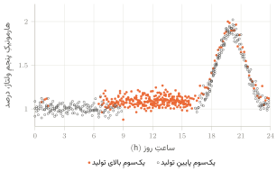
مثال 27.40 (بیگناه در کل، سهیم در ساعتهای یکسان) پرسش. مقایسهٔ ساده و مقایسه در ساعتهای ۱۰ تا ۱۴ چه میگویند؟
پاسخ. ساده: تولیدِ بالا 1.14 % و پایین 1.25 %، گویی نیروگاه هارمونیک را کم میکند (همبستگیِ −0.14). در ۱۰ تا ۱۴: 1.13 در برابرِ 1.05 %، یعنی سهمی برای نیروگاه.
تفسیر. اوجِ عصرگاهیِ پسزمینه در ساعتهایی است که تولیدِ خورشیدی کم است؛ ساعتِ روز مخدوشکننده است. مقایسه باید آن را ثابت نگه دارد، یا نیروگاه در ساعتِ ثابت خاموش و روشن شود. «حقیقتِ» ساختگی سهمِ خودِ نیروگاه را 0.54 % در تولیدِ بالای 60 MW میدهد که با پسزمینه بهصورتِ توان جمع میشود. وارسی: \(\sqrt{1.0^2 + 0.54^2} = 1.14\).
27.5.2 مثالِ کارشدهٔ ۲: شاهدی که هنوز لازم است
ایده. تحلیلِ یک هفته سرنخ میدهد، نه اثبات. پیش از هر نتیجه، این اندازهگیریها لازماند:
worked example 2: the measurements needed before any conclusion
- harmonic CURRENTS at the POC and at the units, not only voltages
- a planned on/off (or step) test at a fixed hour and a fixed
- network state, agreed with the operator
- the switching log of the network (capacitor banks, lines)
- the neighbour's own load and capacitor status
- transducer data at the 5th and 7th (lesson A)
- a longer period covering weekdays, weekends and seasons
the week shows a correlation inside fixed hours, which is
a lead, not a proof; the report says 'consistent with a
plant contribution growing with output, to be confirmed',
and lists these items as its next stepsمثال 27.41 («سازگار با، برای تأیید») پرسش. برای بررسیِ یک مشکلِ مشکوکِ هارمونیکی، چه اندازهگیریهایی لازم است؟
پاسخ. جریانهای هارمونیکی در نقطهٔ اتصال و واحدها (نه فقط ولتاژ)؛ آزمونِ خاموش و روشنِ برنامهریزیشده در ساعت و وضعِ ثابتِ شبکه با توافقِ بهرهبردار؛ سابقهٔ کلیدزنیِ شبکه؛ بار و خازنهای همسایه؛ دادهٔ مبدلها در پنجم و هفتم؛ دورهٔ بلندتر با روزهای کاری، تعطیل و فصلها.
تفسیر. گزارش میگوید «سازگار با سهمی از نیروگاه که با تولید بالا میرود؛ برای تأیید» و این قلمها را گامهای بعدی میآورد. ادعای علیت بیش از شاهد، گزارش را بیاعتبار میکند. وارسی: هر قلم یکی از گامهای بخش 27.4.1 را میپوشاند.
- همبستگیِ کلِ هفته علیت فرض شده است.
- فقط ولتاژ سنجیده شده و جریانِ هارمونیکیِ نیروگاه نه.
- مقایسهٔ روشن و خاموش در ساعتهای متفاوت انجام شده است.
- چرا همبستگیِ منفی نشان نمیدهد نیروگاه هارمونیک را کم میکند؟
- مقایسه در ساعتهای صفر تا پنج چه نشان میدهد و چرا اختلاف کم است؟
- گزارشِ این هفته را در سه جمله بنویسید.
27.5.3 برآوردِ سهمِ نیروگاه با بازه
ایده. مقایسه در ساعتهای یکسان (بخش 27.5.1) جهت را نشان داد؛ برای اندازه یک مدل برازش میکنیم. اگر پسزمینه و سهمِ نیروگاه با فازهای تصادفی جمع شوند، \(U_5^2 = a + (b\,P)^2\)؛ رگرسیون روی \(P^2\) پارامترها را میدهد و بوتاسترپ (نمونهگیریِ دوباره با جایگزینی) بازهٔ اطمینانِ آنها را:
def plant_coefficient(p: np.ndarray, v5: np.ndarray) -> tuple:
"""Fit v5^2 = a + (b p)^2 by least squares on p^2 (background plus
a plant part that grows with output); returns (sqrt a, b)."""
x = np.column_stack([np.ones_like(p), p ** 2])
coef, *_ = np.linalg.lstsq(x, v5 ** 2, rcond=None)
return math.sqrt(max(coef[0], 0.0)), math.sqrt(max(coef[1], 0.0))the plant's share by regression in the midday hours (10-14 h):
170 ten-minute values; fit v5^2 = a + (b p)^2
background sqrt(a) = 1.00 %; plant b = 8.07 % per 1,000 MW
90 % bootstrap interval of b: 7.44 to 8.60
at 100 MW the plant's own part: 0.81 % (interval 0.74-0.86)
the synthetic truth is 0.80 % at 100 MW: the estimate is
close, and the interval says how far one week can be
trusted - a range, not a single number, goes in the reportمثال 27.42 (یک بازه، نه یک عدد) پرسش. سهمِ خودِ نیروگاه در 100 MW و بازهٔ ۹۰ درصدیِ آن از ساعتهای ۱۰ تا ۱۴ چیست؟
پاسخ. 0.81 % با بازهٔ 0.74 تا 0.86 %؛ پسزمینه 1.00 %.
تفسیر. «حقیقتِ» ساختگی 0.80 % است: برآورد نزدیک است و بازه میگوید یک هفته تا کجا باورکردنی است. گزارش بازه را میآورد. مدل فرضی دارد (جمعِ تصادفی)؛ اگر نیروگاه و پسزمینه همفاز باشند، مدلِ دیگری لازم است و جریانهای هارمونیکی (بخش 27.5.2) آن را روشن میکنند. وارسی: \(\sqrt{1.00^2 + 0.81^2} = 1.29\) در 100 MW.
27.5.4 گسیلِ واحد بر حسبِ بازهٔ توان
ایده. گسیلِ یک واحد یک عدد نیست: با توان تغییر میکند. استانداردِ اندازهگیریِ توربین (STD-053) آن را در بازههای توان گزارش میکند؛ صدکِ ۹۵ هر بازه:
a PV inverter's 5th-harmonic current by power bin (two weeks,
synthetic 10-minute values; 95th percentile per bin):
power bin values 5th A (95 %) % of rated
0- 10 % 193 49.0 0.93
10- 20 % 199 50.9 0.96
20- 30 % 195 55.3 1.04
30- 40 % 215 58.6 1.11
40- 50 % 181 63.0 1.19
50- 60 % 215 66.9 1.26
60- 70 % 191 68.4 1.29
70- 80 % 186 72.2 1.36
80- 90 % 209 75.0 1.42
90-100 % 216 78.1 1.48
the amperes grow slowly with output - far slower than the
fundamental (lesson A); the unit's emission is reported
per power bin, as the turbine measurement standard does
(STD-053) - not as one number; the binned table feeds the
plant's summation of lesson B with the right current at
each output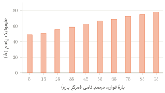
مثال 27.43 (۴۹ تا ۷۸ آمپر) پرسش. هارمونیکِ پنجم در بازهٔ صفر تا ده درصد و نود تا صد درصد چیست؟
پاسخ. 49.0 و 78.1 A، یعنی 0.93 و 1.48 % جریانِ نامی.
تفسیر. آمپرها با توان کُند بالا میروند، بسیار کندتر از پایه (مثال 27.1)؛ جدولِ بازهای جمعِ بخش 27.3.1 را در هر توان با جریانِ درست تغذیه میکند. وارسی: \(78.1/5{,}292 = 1.48\,\%\).
- اگر پسزمینه 1.0 % و سهمِ نیروگاه 0.5 % با جمعِ تصادفی باشد، ولتاژِ کل چیست؟ و همفاز؟
- بوتاسترپ چه چیزی را نشان میدهد که یک برازشِ تنها نمیدهد؟
- چرا گسیل بر حسبِ بازهٔ توان گزارش میشود؟
27.5.5 دادههای پرچمخورده و تأییدِ اقدامِ اصلاحی
پرچمگذاری. در بازهای که فرورفت، فرازِ ولتاژ یا قطعی رخ داده، مقدارهای هارمونیک از خودِ رویداد مخدوش میشوند. روشِ اندازهگیری (STD-034) این بازهها را پرچم میزند تا یک رویداد بهجای اعوجاجِ هارمونیکی شمرده نشود:
flagged intervals in the weekly statistics (synthetic)
40 ten-minute intervals contain a dip; their harmonic
values are distorted by the event itself
95th percentile with them: 1.93 %
95th percentile without them (flagged out): 1.84 %
the measurement method flags intervals with dips, swells
or interruptions so that one event does not appear as
harmonic distortion (STD-034); the report states how many
were flaggedمثال 27.44 (هفتهٔ طوفانی) پرسش. با ۴۰ بازهٔ پرچمخورده، صدکِ ۹۵ با و بی آنها چیست؟
پاسخ. 1.93 و 1.84 %.
تفسیر. گزارش تعدادِ بازههای پرچمخورده را میگوید و آمار را بی آنها میدهد؛ یک هفتهٔ طوفانی نباید نیروگاه را به گسیلِ هارمونیکی متهم کند. وارسی: \(40/1{,}008 = 4\,\%\)، نزدیکِ همان پنج درصدی که صدکِ ۹۵ کنار میگذارد.
تأییدِ اقدامِ اصلاحی. «اقدامِ اصلاحیِ تأییدشده» در ردیفِ ممیزیِ این فصل یعنی مقایسهٔ پیش و پس با معیاری که پیش از هفتهٔ پس تعیین شده:
verifying a corrective action (filter retuned): one week before and after
95th percentile of V5: before 2.29 %, after 1.91 %
reduction 0.38 % (90 % bootstrap interval 0.34 to 0.41)
teaching acceptance: after-week 95th percentile below 2.0 %
and a reduction whose interval excludes zero: accepted
the same network state and season are needed for the
comparison to mean anything; the acceptance rule is set
before the 'after' week, not fitted to its result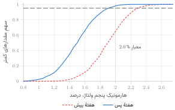
مثال 27.45 (پذیرفته، با بازه) پرسش. صدکِ ۹۵ پیش و پس، کاهش و بازهٔ آن چیست و اقدام پذیرفته میشود؟
پاسخ. 2.29 و 1.91 %؛ کاهش 0.38 % با بازهٔ 0.34 تا 0.41؛ پذیرفته.
تفسیر. مقایسه فقط با وضعِ یکسانِ شبکه و فصل معنا دارد؛ و قاعدهٔ پذیرش پیش از هفتهٔ پس گذاشته میشود، نه با نتیجهٔ آن تنظیم. این سابقه تحویلدادنیِ «اقدامِ اصلاحیِ تأییدشده» است (بخش 27.13). وارسی: \(1.91 < 2.0\) و بازه صفر را ندارد.
- چرا بازههای پرچمخورده از آمار بیرون گذاشته میشوند ولی شمرده میشوند؟
- اگر هفتهٔ پس در فصلِ دیگری بود، چه خطری داشت؟
- چرا قاعدهٔ پذیرش پیش از اندازهگیری گذاشته میشود؟
27.5.6 جمعبندیِ انطباق و ترازکردنِ کنتورها
جمعبندیِ انطباق. نتیجهٔ هفتهٔ اندازهگیری در یک جدول برای هر شاخص: مقدار، حد، حاشیه، وضع. حدهای اینجا جایگاهدارِ آموزشی برای عددهای بهرهبردارند (U-100):
compliance summary at the POC for the measurement week
(95th percentiles where weekly; limits are TEACHING placeholders
for the operator's values - U-100)
index measured limit margin status
5th harmonic voltage % 1.83 2.0 9% within
voltage THD % 2.14 3.0 29% within
Plt (2 h) 0.44 0.8 45% within
voltage unbalance % 0.88 1.4 37% within
rapid voltage change % 0.82 3.0 73% within
the summary states the instrument class, the flagged
intervals, the uncertainty near a limit (lesson K) and the
operator's limit source - a table of numbers alone is not
a compliance statementمثال 27.46 (نُه درصد حاشیه) پرسش. کمحاشیهترین شاخص کدام است و جدول بهتنهایی کافی است؟
پاسخ. هارمونیکِ پنجمِ ولتاژ با 9 % حاشیه؛ نه.
تفسیر. حاشیهٔ نُهدرصدی هماندازهٔ عدمِ قطعیتِ اندازهگیری است (مثال 27.69)؛ بیانِ انطباق ردهٔ دستگاه، بازههای پرچمخورده، عدمِ قطعیت نزدیکِ حد و منبعِ حدها را میخواهد. جدولِ عددها بهتنهایی بیانِ انطباق نیست. وارسی: \(1 - 1.83/2.0 = 0.085\).
آیا عددها با هم جمع میشوند؟ جمعِ کنتورهای واحدها منهای تلفهای میان باید با کنتورِ درآمدِ نقطهٔ اتصال بخواند:
do the numbers add up? one hour at high output (teaching)
sum of the units' meters 101.8 MW
- unit transformers 0.9 MW
- collector cables 0.6 MW
- main transformers 0.4 MW
- line 0.5 MW
expected at the POC 99.4 MW
POC revenue meter 98.9 MW
unexplained -0.5 MW (-0.5%)
an unexplained 0.5 % is larger than the meters' classes
allow: a unit meter, a loss model or a transducer is
wrong; the reconciliation runs every month and a
persistent gap is investigated like a PQ complaintمثال 27.47 (نیم مگاوارِ گمشده) پرسش. با 101.8 MW از واحدها و 2.4 MW تلف، کنتورِ نقطهٔ اتصال 98.9 MW میخواند. شکاف چقدر است و معنایش چیست؟
پاسخ. −0.5 MW، حدودِ 0.5 %: بیش از آنچه ردهٔ کنتورها اجازه میدهد.
تفسیر. یک کنتورِ واحد، مدلِ تلف یا یک مبدل نادرست است. تراز ماهانه اجرا میشود و شکافِ پایدار مانندِ یک شکایتِ کیفیتِ توان بررسی میشود (بخش 27.4.1)؛ همین تراز سهمِ ترانسفورماتورها را در مدلِ تولید (فصلِ ۱۵ و ۲۵) وارسی میکند. وارسی: \(101.8 - 2.4 = 99.4\).
- حاشیهٔ نامتعادلیِ 1.2 % در برابرِ حدِ 1.4 %؟
- اگر تلفها 2.9 MW بودند، شکاف چه میشد؟
27.5.7 آستانهٔ هشدارِ پایشِ دائمی
ایده. پایشِ دائمی (مثال 27.75) وقتی ارزش دارد که هشدارش هم دیر نرسد و هم آنقدر زیاد نباشد که نادیده گرفته شود. آستانه و قاعدهٔ هشدار با دادهٔ همان هفتهٔ اندازهگیری سنجیده میشود:
alarm threshold for the 5th harmonic voltage (one week, 10-minute values)
threshold % values over alarms (any value) alarms (3 in a row)
1.70 84 11 7
1.80 59 13 7
1.90 24 14 2
limit 2.0 %: an alarm at 90 % of it rings every
evening (the network's own evening peak); a higher
threshold alone gives MORE separate alarms (the runs
break into pieces), while three values in a row cuts
the noise without hiding a lasting rise; the threshold
and the rule are written into the monitoring plan and
reviewed after the first monthمثال 27.48 (آستانهٔ بالاتر، هشدارِ بیشتر) پرسش. با آستانهٔ 1.80 و 1.90 %، چند هشدار در هفته با «هر مقدار» و با «سه مقدارِ پیاپی» میرسد؟
پاسخ. 13 و 7 برای 1.80؛ 14 و 2 برای 1.90.
تفسیر. آستانه در ۹۰ درصدِ حد هر عصر به صدا درمیآید (اوجِ عصرِ خودِ شبکه). شگفتی این است که آستانهٔ بالاتر بهتنهایی هشدارهای جدای بیشتری میدهد: دورههای بالای آستانه تکهتکه میشوند. قاعدهٔ سه مقدارِ پیاپی نوفه را میبُرد بیآنکه افزایشِ ماندگار را پنهان کند. آستانه و قاعده در طرحِ پایش نوشته و پس از ماهِ نخست بازبینی میشوند. وارسی: هفت هشدارِ «سهتایی» در هفت روز یعنی یکی در هر عصر.
- چرا هشدارِ «هر مقدار» با آستانهٔ بالاتر بیشتر شد؟
- قاعدهٔ سه مقدارِ پیاپی (۳۰ دقیقه) چه رویدادی را ممکن است دیر ببیند؟
27.6 ث. توانایی و شاهدِ خدمتها
ایده. «نیروگاه کنترلِ ولتاژ، پاسخِ فرکانسی و محدودیتِ شیب را فراهم میکند» یک ادعا است. خدمت وقتی واقعی است که هر ادعا یک معیار، یک جا، یک روش و یک سابقه داشته باشد. این بخش از سابقههای آزمون معیارها را میسازد (دادهها ساختگی، A-339؛ معیارها آموزشی؛ عددهای واقعی از قاعدهٔ بهرهبردار و قراردادِ خدمت).
27.6.1 پاسخ به پلهٔ نقطهٔ تنظیمِ ولتاژ
def step_metrics(t: np.ndarray, y: np.ndarray, y0: float, y1: float,
band: float = 0.05) -> dict:
"""Rise time (10 to 90 %), settling time (inside +/- band of the
change for good) and overshoot of a measured step response."""
span = y1 - y0
frac = (np.asarray(y) - y0) / span
t10 = t[np.argmax(frac >= 0.1)]
t90 = t[np.argmax(frac >= 0.9)]
outside = np.where(np.abs(frac - 1) > band)[0]
t_settle = t[0]
if outside.size and outside[-1] + 1 < len(t):
t_settle = t[outside[-1] + 1]
return {"rise": float(t90 - t10), "settle": float(t_settle),
"overshoot": float(max(0.0, frac.max() - 1))}voltage set-point step at the POC: reactive power response (A-339)
metric measured teaching criterion result
rise 0.80 s <= 1.0 s pass
settle 3.00 s <= 5.0 s pass
overshoot 11% <= 15% pass
noise on the record makes 'settled' a matter of definition:
the band (here 5 % of the step) and the filtering belong to
the test procedure agreed beforehand, not chosen after
seeing the data
مثال 27.49 («نشسته» یعنی چه؟) پرسش. زمانِ خیز، زمانِ نشستن و فراجهش چیست و معیارهای آموزشی برآوردهاند؟
پاسخ. 0.80 s، 3.00 s و 11 %؛ هر سه در معیار.
تفسیر. نویزِ سابقه «نشستن» را وابسته به تعریف میکند: نوار (اینجا 5 % پله) و پالایش بخشی از روالِ آزمونِ توافقشدهاند، نه چیزی که پس از دیدنِ داده انتخاب شود. وارسی: زمانِ خیز از ۱۰ تا ۹۰ درصد.
27.6.2 افت با فرکانس از یک رویداد
ایده. شیبِ «افت» (droop) از رویدادِ فرکانسی با برازشِ کمترین مربعاتِ \(-\Delta P\) بر انحرافِ فرکانسِ بیرون از ناحیهٔ مرده اندازهگیری میشود:
over-frequency event: droop measured from 1-s records (A-339)
peak frequency 50.504 Hz; deadband 0.2 Hz (setting); set droop 4 %
least-squares droop from the record: 3.98 %
power reduction at the peak: 15.8 MW; expected 15.2 MW
the fit uses only samples outside the deadband; noise on
both channels widens the uncertainty - the agreed method
states the sample rate, the filter and the fitting window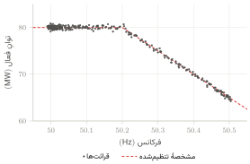
مثال 27.50 (چهار درصد، اندازهگیریشده) پرسش. افتِ اندازهگیریشده و کاهشِ توان در اوج چیست؟
پاسخ. 3.98 % در برابرِ تنظیمِ 4 %؛ کاهشِ 15.8 MW در برابرِ انتظارِ 15.2 MW.
تفسیر. برازش فقط نمونههای بیرون از ناحیهٔ مرده را به کار میبرد؛ نویزِ هر دو کانال عدمِ قطعیت را پهن میکند. روشِ توافقشده بسامدِ نمونهبرداری، پالایه و پنجرهٔ برازش را میگوید. وارسی: \(100 \times 0.304/(50 \times 0.04) = 15.2\).
27.6.3 محدودیتِ شیب
ramp-limit compliance on a broken-cloud day (50 MW PV, minute data)
limit MW/min minutes over the limit share of daylight minutes
10 0 0.0%
5 43 5.9%
2 58 7.9%
without storage the PV alone breaks a tight ramp limit in
many minutes of a broken-cloud day; the battery of ch 20
holds it - the evidence is the POC record, counted by the
agreed rule (does a falling ramp from a cloud count?)مثال 27.51 (قاعدهٔ شمارش) پرسش. در روزِ ابرِ پراکنده، خورشیدیِ 50 MW بیذخیره چند دقیقه از محدودیتِ 5 و 2 MW/min میگذرد؟
پاسخ. 43 و 58 دقیقه (5.9 و 7.9 % دقیقههای روز)؛ محدودیتِ 10 MW/min هرگز.
تفسیر. باتری فصلِ ۲۰ آن را نگه میدارد؛ شاهد سابقهٔ نقطهٔ اتصال است که با قاعدهٔ توافقشده شمرده میشود: آیا شیبِ نزولیِ ناشی از ابر شمرده میشود؟ وارسی: خروجیِ برنامه.
27.6.4 تلهمتری و جای اندازهگیری
telemetry to the operator for a week (4 s samples, synthetic):
expected 151,200, received 149,835: completeness 99.10%
latency: median 0.67 s, 99th percentile 2.66 s
one hour-long gap holds 66% of the loss: a contract that
counts availability by the month hides it, one that counts
gaps longer than a set time shows it - the counting rule is
part of the service definitionthe same service measured at two places (full export, teaching):
quantity at the unit terminals at the POC
reactive power Mvar 68.1 55.8
voltage pu 1.04 1.00
response delay s 0.10 0.25
the transformers and the line take reactive power, the
plant controller adds delay: a capability or a response
proved at the terminals is not proved at the POC, where
the requirement applies (lesson B; ch 20)مثال 27.52 (یک شکافِ یکساعته) پرسش. کاملبودنِ تلهمتری چیست و چه سهمی از کمبود از یک شکاف است؟
پاسخ. 99.10 %؛ شکافِ یکساعته 66 % کمبود را دارد.
تفسیر. قراردادی که دسترسپذیری را ماهانه میشمارد شکاف را پنهان میکند؛ قراردادی که شکافهای بلندتر از یک زمانِ معین را میشمارد آن را نشان میدهد: قاعدهٔ شمارش بخشی از تعریفِ خدمت است. همچنین توانایی یا پاسخی که در پایانهها ثابت شده، در نقطهٔ اتصال ثابت نشده است: 68.1 در برابرِ 55.8 Mvar (مثال 27.20). وارسی: \(151{,}200 \times 0.009 \approx 1{,}365\) نمونهٔ ازدسترفته.
27.6.5 ماتریسِ پذیرشِ خدمتها
acceptance matrix for the plant's services (teaching):
service metric evidence
reactive capability P-Q points at the POC measured at 3 P levels
voltage control step metrics agreed test and band
frequency response droop, deadband, delay event or injected test
ramp limit minutes over the limit agreed counting rule
availability hours ready / hours required service log
telemetry completeness, latency operator's records
power quality 95th percentiles at the POC class A, 1 week+
every claim in the service contract maps to a metric, a
place, a method and a record; a claim without one is not
yet a serviceمثال 27.53 (ادعایی که هنوز خدمت نیست) پرسش. کدام ستونها هر ادعای قراردادِ خدمت را به شاهد تبدیل میکنند؟
پاسخ. معیار، جای اندازهگیری، روش و سابقه.
تفسیر. ادعایی که یکی از اینها را ندارد هنوز خدمت نیست؛ این ماتریس به قراردادهای خدمت (فصلهای ۲۰ و ۲۱) و برنامهٔ آزمونِ راهاندازی (فصلهای ۴۸ تا ۵۰) پیوند میخورد. وارسی: هفت خدمت، هفت ردیف.
- زمانِ خیز و نشستن برای پاسخِ مرتبهٔ اول با ثابتِ زمانیِ 0.4 s؟
- کاهشِ توان با افتِ 5 %، 100 MW، 0.4 Hz انحراف و ناحیهٔ مردهٔ 0.2 Hz؟
- نمونههای ازدسترفته با کاملبودنِ 99.5 % برای یک هفته با نمونهٔ چهارثانیهای؟
- چرا قاعدهٔ شمارشِ شیب پیش از آزمون توافق میشود؟
27.6.6 آزمونِ توانایی، شیبِ Q(U) و پاسخِ سریعِ فرکانس
آزمونِ توانایی P-Q. ادعای توانایی (بخش 27.3.6) در چند سطحِ توانِ فعال، در هر دو جهت، در نقطهٔ اتصال آزموده میشود:
P-Q capability test at the POC against the claim (teaching; 5 % tolerance)
P MW direction claimed Mvar measured Mvar result
10 produce 115.0 118.2 pass
50 produce 100.0 98.1 pass
100 produce 52.0 53.9 pass
10 absorb -110.0 -111.5 pass
50 absorb -95.0 -96.2 pass
100 absorb -48.0 -44.0 FAIL
absorbing at full power falls short (44 against 48 Mvar):
the record of that point - POC voltage, unit terminal
voltages, temperatures, any unit at its current limit -
shows whether the units or the network conditions set the
limit; the finding goes to the operator with the measured
conditions and a plan (repeat, or a revised capability)مثال 27.54 (یک گوشه کم) پرسش. کدام نقطه از ادعا با رواداریِ 5 % کم است و گام بعدی چیست؟
پاسخ. جذب در 100 MW: 44 در برابرِ 48 Mvar.
تفسیر. سابقهٔ همان نقطه (ولتاژِ نقطهٔ اتصال، ولتاژِ پایانهها، دماها، واحدی در حدِ جریان) نشان میدهد واحدها یا شرایطِ شبکه حد را ساختهاند؛ یافته با شرایطِ اندازهگیریشده و یک برنامه (تکرار یا توانایی بازنگریشده) به بهرهبردار میرود. وارسی: \(48 \times 0.95 = 45.6 > 44\).
شیبِ Q(U). در حالتِ کنترلِ ولتاژ با مشخصهٔ Q(U)، شیب از سابقه با برازش روی انحرافِ ولتاژِ بیرون از ناحیهٔ مرده اندازهگیری میشود:
Q(U) characteristic measured from records (teaching set 33 Mvar per
5 % voltage, deadband 0.5 %):
fitted slope -6.65 Mvar per 1 % voltage outside the deadband
set value -6.60 Mvar per 1 %: within 0.8%
the sign is negative: the plant absorbs when the voltage
rises and produces when it falls; the fit needs voltage
changes from the grid, so the test window is chosen with
the operator (or a set-point step is used instead)مثال 27.55 (منفی، همانطور که باید) پرسش. شیبِ برازششده با مقدارِ تنظیمشده چه نسبتی دارد؟
پاسخ. −6.65 در برابرِ −6.60 Mvar بر درصد: در 0.8 %.
تفسیر. علامتِ منفی یعنی وقتی ولتاژ بالا میرود نیروگاه جذب میکند. برازش به تغییرِ ولتاژ از سوی شبکه نیاز دارد؛ پنجرهٔ آزمون با بهرهبردار انتخاب میشود یا بهجای آن پلهٔ نقطهٔ تنظیم به کار میرود (بخش 27.6.1). وارسی: \(33/5 = 6.6\).
پاسخِ سریعِ فرکانس. باتری (سناریوی S1) میتواند در کسری از ثانیه پاسخ دهد؛ اثباتِ آن ضبطکنندهٔ سریع میخواهد:
fast frequency response: timing of a 20 MW battery response (teaching)
frequency crosses the trigger at 0 s; detection 250 ms;
ramp to full power over 400 ms
full response at 0.65 s; a 1 s requirement: met
the measurement must resolve tens of milliseconds: a
1-second SCADA record cannot prove it - the test uses a
fast recorder at the POC, time-stamped from one clockمثال 27.56 (شصتوپنج صدم ثانیه) پرسش. با آشکارسازیِ 250 ms و شیبِ 400 ms، پاسخِ کامل کی است و الزامِ یکثانیهای برآورده است؟
پاسخ. 0.65 s؛ برآورده.
تفسیر. سابقهٔ یکثانیهای SCADA نمیتواند آن را ثابت کند؛ آزمون ضبطکنندهٔ سریع در نقطهٔ اتصال با زمانِ یک ساعتِ مشترک میخواهد (فصلِ ۲۶). وارسی: \(0.25 + 0.40 = 0.65\).
- با رواداریِ 10 %، نقطهٔ جذب در 100 MW پذیرفته میشد؟
- شیبِ Q(U) برای 40 Mvar در 4 % ولتاژ؟
- با آشکارسازیِ 500 ms و شیبِ 600 ms، الزامِ یکثانیهای؟
27.6.7 دسترسپذیریِ خدمت، خطای زاویه و رانشِ ساعت
دسترسپذیریِ خدمت. خدمتِ قراردادی وقتی در دسترس است که آماده باشد، نه فقط وقتی که خواسته شود. از سابقهٔ رویدادها:
\[ A = 1 - \frac{T_\text{lost}}{T_\text{required} - T_\text{excused}} \tag{27.9}\]
availability of the voltage-control service over a year (teaching)
event hours
controller fault 6
comms link down 14
planned upgrade 24
battery HVAC trip 9
grid outage (excused) 30
required 8760 h, excused 30 h, lost 53 h
availability = 1 - lost / (required - excused) = 99.393%
against a teaching 99.5 % target: missed
whether a planned upgrade counts as lost, and which grid
events are excused, are clauses of the service contract
(ch 21) - the log is the evidence, the clauses the ruleمثال 27.57 (پنجاهوسه ساعت) پرسش. با ۵۳ ساعت ازدسترفته و ۳۰ ساعت معاف، دسترسپذیری چیست و هدفِ آموزشیِ 99.5 % برآورده است؟
پاسخ. 99.393 %؛ برآورده نیست.
تفسیر. اگر ارتقای برنامهریزیشده (24 ساعت) معاف بود، دسترسپذیری 99.67 % میشد؛ اینها بندهای قراردادِ خدمتاند (فصلِ ۲۱). سابقه شاهد است، بندها قاعده. وارسی: \(53/8{,}730 = 0.607\,\%\).
خطای زاویه و توانِ واکنشیِ اندازهگیریشده. در توانِ کامل و ضریبِ توانِ یک، خطای کوچکِ زاویهٔ مبدلها توانِ واکنشیای نشان میدهد که نیست: \(\Delta Q \approx P \sin\Delta\varphi\):
reactive power error from a transducer phase error (100 MW, pf 1)
phase error deg Q error Mvar share of a 33 Mvar requirement
0.1 0.17 0.5%
0.3 0.52 1.6%
0.5 0.87 2.7%
1.0 1.75 5.3%
at full power and unity power factor a small angle error
shows up as reactive power that is not there: half a degree
is nearly a megavar; the reactive measurement for a service
uses a metering-class chain with its angle stated, and the
error budget is part of the acceptance (lesson K)مثال 27.58 (نیم درجه، یک مگاوار) پرسش. خطای زاویهٔ 0.5° در 100 MW چه خطایی در توانِ واکنشی میسازد؟
پاسخ. 0.87 Mvar، 2.7 % از الزامِ 33 Mvar.
تفسیر. اندازهگیریِ توانِ واکنشی برای خدمت زنجیرهای با کلاسِ اندازهگیری و زاویهٔ اعلامشده میخواهد و بودجهٔ خطا بخشی از پذیرش است (بخش 27.7؛ همان پدیدهای که فصلِ ۲۵ در اندازهگیریِ تلف دید). وارسی: \(100 \times \sin 0.5^\circ = 0.87\).
رانشِ ساعت. ضبطکنندهای که منبعِ زمانِ ماهوارهای را از دست بدهد با ساعتِ داخلیاش ادامه میدهد:
a recorder's clock without its satellite time (teaching drifts)
drift ppm after 1 h s after 1 day s after 1 week s
1 0.004 0.09 0.6
5 0.018 0.43 3.0
20 0.072 1.73 12.1
50 0.180 4.32 30.2
a 20 ppm clock is 1.7 s wrong after a day: 10-minute values
barely notice, an event sequence (ch 26) is ruined; the
recorder logs when it lost and regained the time source,
and that log is checked before events are readمثال 27.59 (یکوهفتدهم ثانیه در روز) پرسش. ساعتِ 20 ppm پس از یک روز و یک هفته چقدر خطا دارد؟
پاسخ. 1.73 و 12.1 s.
تفسیر. مقدارهای دهدقیقهای بهسختی میفهمند، دنبالهٔ رویدادها (فصلِ ۲۶) نابود میشود. ضبطکننده زمانِ ازدستدادن و بازیافتنِ منبعِ زمان را ثبت میکند و آن سابقه پیش از خواندنِ رویدادها وارسی میشود. وارسی: \(20 \times 10^{-6} \times 86{,}400 = 1.73\).
- دسترسپذیری اگر ارتقای برنامهریزیشده معاف بود؟
- خطای توانِ واکنشی با 0.2° در 60 MW؟
- خطای ساعتِ 5 ppm پس از سی روز؟
27.6.8 کارکردِ پویا: بازیابیِ توانِ فعال پس از خطا
ایده. پس از پاکشدنِ خطای شبکه، نیروگاه باید توانِ فعالِ پیش از خطا را در زمانی معین بازیابد: نه کند (شبکه آن انرژی را لازم دارد) و نه بسیار تند (شبکهٔ ضعیف را تکان میدهد). معیار زمان از پاکشدن تا ۹۰ درصدِ توانِ پیش از خطاست:
active-power recovery after a 150 ms grid fault (synthetic, A-339)
80 MW before; 5 MW during the fault; recovery after clearing
time from clearing to 90 % of the pre-fault power: 0.56 s
teaching requirement 1.0 s: met
recovery too slow loses energy the grid counts on; too fast
can shake a weak grid - the operator sets a window, and
the model used in the grid study (ch 28) must reproduce
the measured curve (model validation)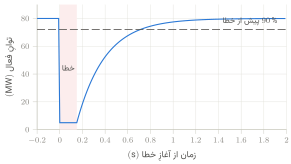
مثال 27.60 (پنجاهوشش صدم ثانیه) پرسش. زمان تا ۹۰ درصد پس از پاکشدن چیست و الزامِ آموزشیِ یکثانیهای برآورده است؟
پاسخ. 0.56 s؛ برآورده.
تفسیر. بهرهبردار پنجرهای میگذارد؛ و مدلی که در مطالعهٔ شبکه (فصلِ ۲۸) به کار میرود باید همین منحنیِ اندازهگیریشده را بازتولید کند: اعتبارسنجیِ مدل. ضبطکنندهٔ سریع در نقطهٔ اتصال، با زمانِ یک ساعتِ مشترک، شاهد است (مثال 27.56). وارسی: \(5 + 75(1 - e^{-t/0.25}) = 72\) میدهد \(t = 0.25 \ln(75/8) = 0.56\).
- با ثابتِ زمانیِ 0.5 s، زمان تا ۹۰ درصد؟
- چرا بازیابیِ خیلی تند هم مشکل است؟
27.6.9 فرکانسِ شبکه، میراییِ نوسان و حجمِ داده
خدمتِ فرکانس چقدر فعال است؟ آمارِ فرکانس در نقطهٔ اتصال نشان میدهد ناحیهٔ مردهٔ افت چند وقت یک بار گذشته میشود:
frequency at the POC for a week (synthetic 10-s means)
standard deviation 72 mHz; 99.5 % of values within +/- 200 mHz
outside the 0.2 Hz deadband: 0.50 % of the time
the droop service acts rarely here, so its energy cost is
small; on a smaller, weaker system the same deadband is
crossed far more often - the service's cost and its
testing depend on the grid it servesمثال 27.61 (نیم درصد از زمان) پرسش. با انحرافِ معیارِ 72 mHz، چه سهمی از هفته بیرون از ناحیهٔ مردهٔ 0.2 Hz است؟
پاسخ. حدودِ 0.5 %.
تفسیر. خدمتِ افت اینجا کم فعال است، پس هزینهٔ انرژیاش کم است؛ در سامانهٔ کوچکتر و ضعیفتر همان ناحیهٔ مرده بسیار بیشتر گذشته میشود. هزینه و آزمونِ خدمت به شبکهای که به آن خدمت میکند بستگی دارد. وارسی: \(0.2/0.072 = 2.8\) انحرافِ معیار.
میراییِ نوسان. نوسانِ توانی که پس از یک رویداد کند خاموش میشود نشانهٔ برهمکنشِ کنترلهاست. از دو قلهٔ پیاپی، کاهشِ لگاریتمی \(\Lambda = \ln(\hat{p}_1/\hat{p}_2)\) و ضریبِ میرایی:
\[ \zeta = \frac{\Lambda}{\sqrt{4\pi^2 + \Lambda^2}} \tag{27.10}\]
damping of a recorded power oscillation (ringdown, synthetic)
first two peaks 2.06 and 1.41 MW, 1.26 s apart
frequency 0.79 Hz; log decrement 0.378; damping ratio 0.060
a teaching acceptance of 5 % damping: met
an oscillation that dies slowly is a sign of control
interaction (plant controller, converters, a weak grid);
the operator may require a minimum damping and the model
must show the same mode (ch 28)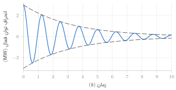
مثال 27.62 (شش درصد میرایی) پرسش. از قلههای 2.06 و 1.41 MW، بسامد و ضریبِ میرایی چیست؟
پاسخ. 0.79 Hz و 0.060؛ معیارِ آموزشیِ پنج درصد برآورده است.
تفسیر. بهرهبردار ممکن است میراییِ کمینه بخواهد و مدلِ مطالعهٔ شبکه (فصلِ ۲۸) باید همان مُد را نشان دهد؛ میراییِ کم در شبکهٔ ضعیف (بخش 27.3.5) نخستین نشانهٔ تنظیمِ نامناسبِ کنترلکننده است. وارسی: \(\ln(2.06/1.41) = 0.379\).
حجمِ دادهٔ پایش. طرحِ پایش (مثال 27.75) داده میسازد؛ مسئله ذخیره نیست، خواندن است:
data volume of the permanent monitoring plan (teaching)
110 channels of 10-minute values: 5.8 million values a year (~0.05 GB)
400 recorded events a year of 2 s waveforms: ~1.6 GB
five years kept: about 8 GB - small for storage, large for
people: the plan says who reads what (weekly summary,
every event over a threshold) and how a finding becomes
an investigation- ضریبِ میرایی از قلههای 2.0 و 1.6؟
- چرا خواندنِ داده از ذخیرهٔ آن سختتر است و طرحِ پایش چه پاسخی میدهد؟
27.6.10 خدمتِ توانِ واکنشی چه میارزد؟
ایده. اگر بهرهبردار برای توانِ واکنشی پول بدهد (یا آن را الزام کند)، نیروگاه باید بداند تأمینِ آن چه هزینهای دارد. جریانِ بیشتر در ضریبِ توانِ کمتر تلفِ مسی میسازد؛ اینجا فقط خطِ 132 kV با بهای آموزشیِ پرداخت و انرژی:
a reactive-power service at full export: payment against extra losses
(teaching: 0.6 u per Mvar-h paid; losses valued at 70 u/MWh; line only)
pf Q Mvar paid u/h extra line loss kW loss cost u/h net u/h
0.98 20.3 12.2 20 1.4 10.8
0.95 32.9 19.7 53 3.7 16.0
0.90 48.4 29.1 114 8.0 21.1
the line loss alone eats a little of the payment; the
transformers' and cables' extra losses (ch 25) and the
curtailment on a hot day (lesson B) eat more - a service
price is judged against the plant's whole cost of
providing it (ch 21), not the line aloneمثال 27.63 (تلفِ خط بخشِ کوچکی است) پرسش. در توانِ کامل و ضریبِ توانِ 0.90، پرداخت، هزینهٔ تلفِ اضافهٔ خط و خالص چیست؟
پاسخ. 29.1، 8.0 و 21.1 واحدِ پول در ساعت؛ تلفِ خط حدودِ 27 % پرداخت را میخورد.
تفسیر. تلفِ اضافهٔ ترانسفورماتورها و کابلها (فصلِ ۲۵) و کاهشِ تولید در روزِ گرم وقتی واحدها به حدِ جریان میرسند (بخش 27.3.6) بیشتر میخورند. بهای خدمت با کلِ هزینهٔ تأمینِ آن برای نیروگاه سنجیده میشود (فصلِ ۲۱)، نه با خط بهتنهایی؛ و بهای آموزشیِ اینجا هیچ بازار یا طرحِ خدمتی را فرض نمیکند. وارسی: \(Q = 100 \tan(\arccos 0.90) = 48.4\,\text{Mvar}\) و \(48.4 \times 0.6 = 29.1\).
خطاهای رایج.
- سنجیدنِ خدمت فقط با پرداخت، بی تلف و بی کاهشِ تولید.
- فرضِ اینکه توانِ واکنشی «رایگان» است چون انرژیِ فعال نمیفروشد.
- محاسبهٔ تلف با جریانِ 1.0 پریونیتِ ولتاژ وقتی ولتاژ کمتر است (جریان بیشتر میشود).
- توانِ واکنشی در ضریبِ توانِ 0.95 و 100 MW؟
- چرا تلفِ اضافه با مربعِ جریان رشد میکند و پرداخت با \(Q\) خطی؟
27.6.11 جریانِ واکنشی در فرورفت و شمارِ فرورفتها
پشتیبانیِ ولتاژ. در فرورفت، واحدها جریانِ واکنشی به نسبتِ افتِ ولتاژ تزریق میکنند (\(I_q = k\,(1 - U)\)، با سقفِ جریان). در مدلِ شبهماندگار با امپدانسِ شبکهٔ \(x\) (پریونیت بر پایهٔ نیروگاه)، ولتاژ از \(U_0\) بالا میرود:
\[ U = \frac{U_0 + x\,k}{1 + x\,k} \tag{27.11}\]
voltage during a dip with the plant's reactive current (k = 2,
current limited to 1.0 pu of 121 MVA; teaching quasi-steady model)
SCR x pu U without pu U with pu reactive current pu
15 0.081 0.50 0.57 0.86
15 0.081 0.80 0.83 0.34
5 0.242 0.50 0.66 0.67
5 0.242 0.80 0.87 0.27
3 0.403 0.50 0.72 0.55
3 0.403 0.80 0.89 0.22
on a strong grid the plant's reactive current lifts the
voltage a little; on a weak grid much more - which also
means the plant must stop injecting quickly when the fault
clears, or the voltage overshoots (lesson E, recovery)مثال 27.64 (شبکهٔ ضعیف، اثرِ بزرگ) پرسش. با \(k = 2\) و فرورفتِ 0.50 پریونیت، ولتاژ با جریانِ واکنشی در SCRِ ۱۵ و ۳ چه میشود؟
پاسخ. 0.57 و 0.72 پریونیت.
تفسیر. در شبکهٔ قوی جریانِ واکنشی ولتاژ را کمی بالا میبرد؛ در شبکهٔ ضعیف بسیار بیشتر. یعنی پس از رفعِ خطا تزریق باید زود قطع شود، وگرنه ولتاژ از نامی بالاتر میرود (بخش 27.6.8). وارسی: \(x = 121/300 = 0.403\) و \((0.5 + 0.807)/1.807 = 0.72\).
ناحیهٔ آسیبپذیری. خطای سهفاز در فاصلهٔ \(d\) روی خطی که از پستِ شبکه بیرون میرود، نقطهٔ اتصال را به نسبتِ تقسیمِ امپدانس پایین میآورد. هر چه حدِ ولتاژ بالاتر، ناحیه بزرگتر و شمارِ فرورفتها بیشتر:
area of vulnerability: residual voltage at the POC for a three-phase
fault d km out on a 132 kV line (source 11.6 ohm, line 0.4 ohm/km;
4 lines radiating, 2 faults per 100 km a year; teaching)
residual below fault within km dips a year (upper bound)
0.50 29 2.3
0.70 68 5.4
0.85 165 13.2
every fault is treated as three-phase here, so the counts
are an upper bound; single-phase faults (most of them)
give shallower dips at the plant after the transformers;
the ride-through requirement is not a rare event - a
plant connected to this network rides several dips a
year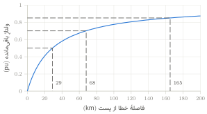
مثال 27.65 (چند فرورفت در سال) پرسش. با چهار خط و دو خطا در هر صد کیلومتر در سال، چند فرورفتِ زیرِ 0.7 پریونیت در سال انتظار میرود (کرانِ بالا)؟
پاسخ. خطا در 68 km؛ حدودِ 5.4 فرورفت در سال.
تفسیر. همهٔ خطاها سهفاز فرض شدهاند، پس شمار کرانِ بالاست؛ بیشترِ خطاها تکفازند و در دنبالهٔ مثبت فرورفتِ کمعمقتری میدهند (بخش 27.2.11). الزامِ عبور از خطا رویدادِ نادر نیست: نیروگاهی در این شبکه هر سال چند فرورفت را میگذراند، و جدولِ سالانهٔ فرورفتها (بخش 27.2.7) همین را نشان میدهد. وارسی: \(0.7/0.3 \times 11.6/0.4 = 68\,\text{km}\) و \(2 \times 4 \times 68/100 = 5.4\).
- ولتاژ با \(k = 2\)، فرورفتِ 0.80 و SCRِ ۵؟
- فاصلهٔ خطا برای ولتاژِ باقیماندهٔ 0.9 پریونیت؟
- چرا شمارِ این مدل کرانِ بالاست؟
27.6.12 رویدادهای خودِ نیروگاه و میرا کردنِ نوسانِ توان
رویدادهای خودِ نیروگاه. کلیدزنیِ صافی، قطعِ یک فیدر، گذرِ باتری از شارژ به دشارژ و قطعِ کلِ نیروگاه هر یک پلهای در ولتاژ میسازند (معادلهٔ 27.2). فهرستِ این رویدادها با بسامدِ رخدادشان بخشی از ارزیابیِ کیفیتِ توان است:
the plant's own events as voltage steps at the POC (1,500 MVA, X/R 8)
and at the 33 kV bus (365 MVA, X/R 10); teaching RVC limit 3 %
event POC dU % 33 kV dU % POC vs limit
5 Mvar filter switched in 0.33 1.36 11%
one wind feeder trips (20 MW) -0.17 -0.55 6%
battery 20 MW charge to discharge 0.33 1.09 11%
whole plant trips, Q 0 -0.83 (off) 28%
whole plant trips, giving 33 Mvar -3.01 (off) 100%
only a whole-plant trip while giving reactive power reaches
the limit at the POC; inside the plant the 33 kV bus
sees steps four times larger - the filter switching is a
1.4 % event there; the event list (with how often each
happens) is part of the PQ assessment, and a trip that
must be rare is designed to be rare (ch 26)مثال 27.66 (قطعِ کامل با توانِ واکنشی) پرسش. کدام رویداد به حدِ آموزشیِ 3 % تغییرِ سریعِ ولتاژ در نقطهٔ اتصال میرسد؟
پاسخ. قطعِ کلِ نیروگاه وقتی 33 Mvar میدهد: −3.01 %؛ بی توانِ واکنشی −0.83 %.
تفسیر. شینهٔ 33 kV پلههای چهار برابر بزرگتری میبیند (کلیدزنیِ صافی 1.36 %)، که برای تغذیهٔ کمکی و کنترلها مهم است. قطعِ کامل باید نادر باشد و نادر طراحی میشود (فصلِ ۲۶)؛ و چون توانِ واکنشیِ دادهشده پله را سهبرابر میکند، این پیوند میانِ خدمتِ ولتاژ و خطرِ قطع در گزارش میآید. وارسی: با \(R = X/8\) و \(|Z| = 1/1{,}500\) (پریونیت بر مگاولتآمپر)، \((100 + 33 \times 8)/(1{,}500\sqrt{65}) = 364/12{,}093 = 3.01\,\%\).
میرا کردنِ نوسانِ توان. اگر بهرهبردار یک مُدِ نوسانیِ کممیرا بشناسد (بخش 27.6.9)، نیروگاه میتواند توانِ فعالِ خود را در خلافِ سرعتِ آن مُد تغییر دهد و میرایی بیفزاید:
power oscillation damping (modal teaching model: 0.8 Hz mode,
damping 0.06; the plant modulates P against the mode's speed)
gain damping plant swing peak MW time to 10 % s
0.0 0.06 0.00 7.5
0.5 0.11 1.29 3.9
1.0 0.16 2.41 2.6
more gain, more damping - and a larger power swing the
plant must be able to give at that moment (headroom in
both directions: curtailed PV or the battery); the
operator states the mode and the required damping, the
model (ch 28) shows the gain is stable, and a test shows
the plant's power swings at the mode's frequency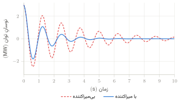
مثال 27.67 (میرایی، با بهای توان) پرسش. با بهرهٔ 1.0 میرایی و زمان تا ده درصد چه میشود و نیروگاه چه نوسانی باید بدهد؟
پاسخ. میرایی از 0.06 به 0.16؛ زمان از 7.5 به 2.6 s؛ نوسانِ توانِ نیروگاه تا حدودِ 2.4 MW.
تفسیر. بهرهٔ بیشتر میراییِ بیشتر و نوسانِ توانِ بزرگتری میخواهد؛ نیروگاه باید در هر دو جهت جا داشته باشد (خورشیدیِ محدودشده یا باتری). بهرهبردار مُد و میراییِ لازم را میگوید، مدل (فصلِ ۲۸) پایداریِ بهره را نشان میدهد و آزمون نشان میدهد توانِ نیروگاه در بسامدِ مُد نوسان میکند. وارسی: \(\ln 10/(0.06 \times 2\pi \times 0.8) = 7.6\,\text{s}\).
- پلهٔ ولتاژِ نقطهٔ اتصال از قطعِ فیدرِ 20 MW در شبکهٔ 500 MVA با \(X/R = 5\)؟
- با بهرهٔ 0.5، زمان تا ده درصد (تقریبی)؟
- چرا میراکننده در نیروگاهِ بیجای بالا (در توانِ کامل) فقط در یک جهت کار میکند؟
27.7 ساخت و شاهدِ صافی و کنتور
ایده. صافی و دستگاهِ کیفیتِ توان محصولاند و حدهایشان در کارخانه ثابت میشود؛ نیروگاه را آزمونهای محل ثابت میکنند. فرایندِ کامل در فصلهای ۴۶ و ۴۸ میآید؛ اینجا پیوندها را میبینیم.
خرابیِ یک واحدِ خازن. بانکِ خازنیِ صافی از چند واحدِ موازی ساخته میشود؛ هر واحدِ خراب ظرفیت را کم و تنظیم را بالا میبرد:
filter capacitor bank: 12 units in parallel per phase (teaching)
failed units capacitance % tuned to h distance to the 5th
0 100.0 4.70 +0.30
1 91.7 4.91 +0.09
2 83.3 5.15 -0.15
3 75.0 5.43 -0.43
each failed unit raises the tuning toward the 5th, where the
filter would sink the whole network's 5th harmonic and
overload; the bank's unbalance protection (a current between
two star halves) sees the first failed unit and alarms, the
second trips - the settings come from the maker's designمثال 27.68 (به سوی پنجم) پرسش. با ۱۲ واحدِ موازی در هر فاز، پس از یک و دو واحدِ خراب تنظیم کجاست؟
پاسخ. 4.91 و 5.15: دومی از پنجم گذشته است.
تفسیر. حفاظتِ نامتعادلیِ بانک (جریانِ میانِ دو نیمهٔ ستاره) نخستین واحدِ خراب را میبیند و هشدار میدهد و دومی را قطع میکند؛ تنظیمها از طرحِ سازنده است. وارسی: \(4.7/\sqrt{11/12} = 4.91\).
القاگر: رواداری و ضریبِ کیفیت.
the reactor: inductance tolerance and quality factor (teaching)
L tolerance tuned to h
-3% 4.77
+0% 4.70
+3% 4.63
quality factor filter impedance at its tuning ohm
20 2.43
40 1.21
80 0.61
a lower quality factor damps the resonance below the tuning
but costs losses at 50 Hz and at the 5th; taps on the reactor
allow the tuning to be set on site after the capacitors are
measured - the factory records give both valuesعدمِ قطعیتِ اندازهگیری نزدیکِ حد.
uncertainty of a 5th-harmonic voltage reading near a limit (teaching)
component % of the reading
instrument (class A, teaching) 5.0
inductive VT at the 5th 3.0
window and grouping 1.0
combined (root sum of squares) 5.9
95th percentile 1.83 % +/- 0.11: range 1.72 to 1.94 % against a teaching
limit of 2.0 %
the range reaches the limit: 'compliant' and 'not compliant'
both fit the data; the agreed method says how uncertainty
is treated (guard band or not) before the reading is takenمثال 27.69 (هر دو نتیجه با داده سازگارند) پرسش. صدکِ ۹۵ 1.83 % با عدمِ قطعیتِ ترکیبیِ 5.9 % قرائت در برابرِ حدِ آموزشیِ 2.0 %: نتیجه چیست؟
پاسخ. بازهٔ 1.72 تا 1.94 %: زیرِ حد، ولی نزدیک.
تفسیر. اگر قرائت 1.90 % بود، بازه از حد میگذشت و هم «سازگار» و هم «ناسازگار» با داده جور درمیآمد؛ روشِ توافقشده میگوید عدمِ قطعیت چگونه به کار میرود (با نوارِ محافظ یا بی آن)، پیش از قرائت. وارسی: \(\sqrt{5^2 + 3^2 + 1^2} = 5.9\).
زنجیرهٔ شاهد از کارخانه تا محل.
product limits and the evidence chain (factory to site):
item checked record
filter capacitors capacitance, losses, insulation routine tests
filter reactor inductance, Q, temperature rise routine/type tests
filter assembly tuning measured on site commissioning
PQ instrument class A certificate, calibration certificate
plant controller FAT of the control functions FAT (ch 46)
service tests steps, droop, P-Q points site tests (ch 48)
the factory proves the product, the site proves the plant;
both records sit in the dossier next to the investigation
and the monitoring plan- با ۱۰ واحد و دو واحدِ خراب، تنظیمِ صافیِ 4.7 کجا میرود؟
- عدمِ قطعیتِ ترکیبیِ 4 % و 3 %؟
- چرا تنظیمِ صافی در محل پس از اندازهگیریِ خازنها با تپِ القاگر انجام میشود؟
27.7.1 تلفِ القاگرِ صافی با جریانهای هارمونیک
ایده. القاگرِ صافی جریانِ هارمونیکِ پنجم و هفتم را میبرد؛ و مقاومتِ مؤثرِ آن با بسامد (پوستی و گردابی) بالا میرود. القاگری که فقط روی جریانِ 50 Hz رتبه گرفته داغ میشود:
filter reactor loss with harmonic currents (teaching):
fundamental 87 A; 5th, 7th, 11th: 31 A, 9 A, 4 A
order current A R factor loss kW (3 phases)
1 87 1.00 1.84
5 31 2.25 0.51
7 9 3.45 0.06
11 4 7.05 0.03
total 2.44 kW; the 5th adds 28 % to the 50 Hz loss
a reactor rated on 50 Hz current alone runs hot: the
specification gives the harmonic duty and the maker's heat
run proves it (lesson K)مثال 27.70 (بیستوهشت درصد بیشتر) پرسش. با جریانهای آموزشیِ هارمونیک، کلِ تلفِ القاگر و افزایشِ ناشی از پنجم چیست؟
پاسخ. 2.44 kW؛ پنجم 28 % به تلفِ 50 Hz میافزاید.
تفسیر. مشخصه وظیفهٔ هارمونیکی را میدهد و آزمونِ گرمای سازنده آن را ثابت میکند؛ ضریبِ رشدِ مقاومت آموزشی است و ضریبِ واقعی از دادهٔ سازنده. وارسی: \(3 \times 31^2 \times 0.08 \times 2.25 = 0.52\,\text{kW}\).
- چرا مقاومتِ مؤثرِ القاگر با بسامد بالا میرود؟
- اگر جریانِ پنجم دو برابر شود، تلفِ آن چند برابر میشود؟
27.7.2 پاسخِ بسامدیِ CVT و وارسیِ دستگاه در محل
CVT در هارمونیکها. ترانسفورماتورِ ولتاژِ خازنی یک تقسیمگرِ تشدیدی است؛ بهرهٔ آن در هارمونیکها با فاصله از تشدیدِ خودش تغییر میکند (مدلِ آموزشی):
a capacitive VT's ratio error at harmonic orders (teaching resonance
near the 10th): |H(h)| = 1 / |1 - (h / h_r)^2|
order gain true 1.0 % reads as
3 1.10 1.10 %
5 1.33 1.33 %
7 1.96 1.96 %
11 4.76 4.76 %
13 1.45 1.45 %
17 0.53 0.53 %
near its own resonance the CVT reads several times too high,
far above it (beyond the 14th here) too low - depending on
where that resonance lies;
a value from a CVT is not a harmonic measurement unless the
transducer has been characterised at that orderمثال 27.71 (چهار برابر در یازدهم) پرسش. با تشدیدِ آموزشی نزدیکِ دهم، هارمونیکِ 1 % در مرتبهٔ ۱۱ و ۱۷ چه خوانده میشود؟
پاسخ. 4.76 % و 0.53 %.
تفسیر. نزدیکِ تشدید بسیار زیاد و دور از آن کم: عددی که از CVT میآید اندازهگیریِ هارمونیک نیست مگر مبدل در آن مرتبه مشخصهیابی شده باشد (مثال 27.6). وارسی: \(1/|1 - 1.21| = 4.76\).
وارسیِ دستگاه در محل. با منبعِ مرجع، دستگاهِ کیفیتِ توان در محل وارسی میشود:
on-site check of a PQ instrument with a reference source (teaching)
quantity reference reading tolerance result
U1 % 100.000 100.050 +/- 0.100 pass
U5 % 2.000 2.040 +/- 0.050 pass
U7 % 1.000 0.990 +/- 0.050 pass
Pst 1.000 1.030 +/- 0.050 pass
f Hz 50.000 50.002 +/- 0.010 pass
the check proves the instrument on site, not the
transducers - those need their own data (lesson A); the
record joins the calibration certificate in the dossierمثال 27.72 (دستگاه آری، مبدلها نه) پرسش. این وارسی چه چیزی را ثابت میکند و چه چیزی را نه؟
پاسخ. دستگاه را در محل (همهٔ قرائتها در رواداری)؛ نه مبدلها را، که دادهٔ خودشان را میخواهند.
تفسیر. سابقه کنارِ گواهیِ کالیبراسیون در پرونده میرود؛ زنجیرهٔ کامل = دستگاه + مبدل + سیمکشی. وارسی: پنج قلم، پنج «pass».
27.7.3 تنظیمِ صافی، یک بودجهٔ آماری
ایده. فاصلهٔ تنظیمِ 4.7 تا پنجم یک بودجه است که رواداریِ خازن، رواداریِ راکتور، دما و پیری هر کدام بخشی از آن را خرج میکنند. با نمونهگیری از ده هزار صافیِ فرضی، سهمِ صافیهایی که گاهی از 4.85 به پنجم نزدیکتر میشوند شمرده میشود:
def tuned_orders(n: int, tap_on_site: bool, seed: int = 290) -> np.ndarray:
"""Tuned order h = h0 / sqrt(C L / C0 L0) for n sampled filters."""
rng = np.random.default_rng(seed)
h0 = src.FILTER["h_tune"]
tol = rng.uniform(-0.05, 0.05, n) # capacitor tolerance
temp = rng.uniform(-10, 50, n) # capacitor temperature C
age = rng.uniform(-0.01, 0.0, n) # ageing over the life
d_c = tol - 0.0003 * (temp - 20) + age # -0.03 % per K (teaching)
if tap_on_site: # tap set new, at 20 C:
d_l = -tol + rng.uniform(-0.01, 0.01, n) # cancels the tolerance
else: # but not temperature
d_l = rng.uniform(-0.03, 0.03, n) # or ageing
return h0 / np.sqrt((1 + d_c) * (1 + d_l))the filter's tuned order as a statistical budget (10,000 sampled
filters; C +/- 5 %, L +/- 3 %, -0.03 %/K over -10..50 C, ageing -1 %)
case mean h 99th pct share above 4.85
factory tolerances only 4.71 4.88 4.8%
reactor tap set on site 4.71 4.76 0.0%
with factory tolerances alone about one filter in twenty
sits closer to the 5th than 4.85 at some time; setting
the reactor tap after measuring the installed capacitors
leaves only temperature, ageing and the tap step - the
margin from 4.7 to 5 is a budget, spent by each of theseمثال 27.73 (سربندیِ راکتور در محل) پرسش. با رواداریهای کارخانه بهتنهایی و با تنظیمِ سربندیِ راکتور پس از اندازهگیریِ خازنهای نصبشده، صدکِ ۹۹ و سهمِ بالای 4.85 چیست؟
پاسخ. 4.88 و 4.8 %؛ با سربندی در محل 4.76 و صفر.
تفسیر. حدودِ یک صافی در بیست با رواداریهای کارخانه گاهی به پنجم نزدیک میشود؛ سربندیِ راکتور پس از اندازهگیری فقط دما، پیری و گامِ سربندی را باقی میگذارد. این دلیلِ آن است که سوابقِ کارخانه هر دو مقدار را میدهند (بخش 27.7.1) و دستورالعملِ راهاندازی تنظیمِ سربندی را با خازنهای اندازهگیریشده میخواهد؛ از دست رفتنِ واحدهای خازن (بخش 27.7) همین بودجه را یکجا خرج میکند. وارسی: بدترین حالتِ بیسربندی \(4.7/\sqrt{(1 - 0.05 - 0.009 - 0.01)(1 - 0.03)} = 4.94\).
- اگر رواداریِ خازن ±10 % بود، بدترین تنظیم بیسربندی؟
- چرا سربندی در محل اثرِ دما و پیری را برنمیدارد؟
27.8 نیروگاهِ P: سه مثالِ یکپارچه
مثال 27.74 (مقدماتی: جریان و تشدید با دست) پرسش. جریانِ 100 MW در 132 kV با ضریبِ توانِ 0.95 و مرتبهٔ تشدیدِ شینهٔ 33 kV با 6.77 Mvar خازن را با دست حساب و با کد مقایسه کنید.
by hand: current at pf 0.95 and a resonance order
I = 100 MW / (sqrt3 x 132 kV x 0.95) = 460 A
h = sqrt(365 MVA / 6.77 Mvar) = 7.34
code: 460 A and 7.34پاسخ. 460 A و \(h = 7.34\)؛ کد همان را میدهد.
تفسیر. دو عددی که هر طراحی با آنها آغاز میشود: جریانی که ضریبِ توان میسازد و جایی که تشدید میافتد. وارسی: \(7.34^2 \times 6.77 = 365\).
مثال 27.75 (میانی: طرحِ پایشِ دائمیِ کیفیتِ توان) پرسش. طرحِ پایشِ دائمیِ نیروگاهِ P را بنویسید: کجا، چه، کی.
Plant P power-quality monitoring plan (teaching):
POC: class A, V and I harmonics, flicker, unbalance, events
when: permanent
33 kV bus A and B: V and I harmonics, events
when: permanent
filter (if fitted): branch currents, capacitor unbalance
when: permanent
each unit type: I harmonics against power (sample)
when: yearly, 2 weeks
service tests: steps, droop, P-Q points
when: after any change
one time source; 10-minute and event data kept 5 years;
weekly 95th percentiles reported to the operator if asked;
firmware or setting changes trigger a repeat of the
affected service testsتفسیر. پایش همان شاهدی است که بررسیِ بخش 27.4 پس از شکایت لازم داشت، از پیش آماده؛ تغییرِ فرمافزار یا تنظیم آزمونهای خدمتِ مربوط را تکرار میکند (فصلِ ۲۶، پیکربندی). وارسی: هر ردیف جا، کمیت و زمان دارد.
مثال 27.76 (یکپارچه: مبنای کیفیتِ توان و خدمتها) پرسش. مبنای کیفیتِ توان و خدمتهای نیروگاهِ P را با موردهای باز بنویسید.
power-quality and service basis of Plant P (D-031):
emission: assessed at the POC against the operator's
allocation; screening by in-phase summation, then measured
resonance: no plain capacitor bank on the 33 kV; if Mvar or
filtering is needed, a filter tuned near the 4.7th with
unbalance protection; frequency scan in the grid study
reactive power: from the units, checked at the POC with the
losses between; hot, still days read with the line rating
services: acceptance matrix with metric, place, method and
record for each claim; telemetry gaps counted by length
investigation: workflow with records; comparisons within
fixed hours; currents and on/off tests before conclusions
later findings: the 33 kV resonance moves with the units
online (11th with ~8, 13th with ~3): scans and remedies
are judged at the worst unit count and order; the filter
seen from 132 kV resonates near 4.3 - the network's
ripple-signal frequencies go into its design data; the
reactor tap is set on site after the capacitors are
measured; Q capability is checked at 0.9 pu (43 Mvar,
not 68); the voltage controller reads the POC or
compensates the line; a whole-plant trip while giving
33 Mvar is a 3 % step at the POC; HVAC drives need
chokes or active front ends on the 400 V board
open: the operator's emission allocation (U-100), the
background harmonic levels at the POC (U-101)تفسیر. این تصمیمِ D-031 است. یافتهها: بانکِ خازنیِ ساده تشدید را به هفتم میبرد (مثال 27.16)؛ توانِ واکنشی در توانِ کامل با رتبهٔ خط در روزِ گرم خوانده میشود (مثال 27.18)؛ و از درسهای بعدی: تشدیدی که با شمارِ واحدها جابهجا میشود (مثال 27.32، مثال 27.39)، تشدیدِ صافی از سمتِ 132 kV در برابرِ سیگنالِ ریپل (مثال 27.30)، سربندیِ راکتور در محل (مثال 27.73)، توانایی در لبهٔ پایینِ بازهٔ ولتاژ (مثال 27.25)، نقطهٔ اندازهگیریِ کنترلکننده (مثال 27.29)، پلهٔ قطعِ کامل (مثال 27.66) و درایوهای تابلوی کمکی (مثال 27.33). موردهای باز: تخصیصِ گسیلِ بهرهبردار (U-100) و ترازِ هارمونیکِ پسزمینه در نقطهٔ اتصال (U-101). وارسی: هر بند به یکی از درسهای این فصل برمیگردد.
27.9 عددهای کلیدیِ کیفیتِ توانِ نیروگاهِ P
| کمیت | مقدار | مثال |
|---|---|---|
| THD و TDDِ اینورتر در 5 % توان | 32.7 % و 1.6 % | مثال 27.1 |
| صدکِ ۹۵ هارمونیکِ پنجم (هفتهٔ ساختگی) | 1.83 % | مثال 27.3 |
| تغییرِ ولتاژ با افتِ 30 MW (شبکهٔ ضعیف) | −1.18 % | مثال 27.5 |
| تشدیدِ شینهٔ 33 kV با کابلها؛ با بانکِ خازنی | \(h\) 14.4؛ 7.4 | مثال 27.16 |
| صافیِ 5 Mvar روی 4.7 | 13.95 µF، 32.9 mH | مثال 27.17 |
| جریان در 100 MW و ضریبِ توانِ 0.9 | 486 A | مثال 27.18 |
| توانِ واکنشی در نقطهٔ اتصال در 100 MW | 55.8 Mvar | مثال 27.20 |
| افتِ اندازهگیریشده | 3.98 % | مثال 27.50 |
| کاملبودنِ تلهمتری | 99.10 % | مثال 27.52 |
27.10 گردشِ کارِ کیفیتِ توان و خدمتها
- داده: گسیلِ واحدها، شبکه در نقطهٔ اتصال و شینه، پسزمینه (بخش 27.3).
- غربال: جمعِ همفاز، اسکنِ فرکانسی، تخصیصِ بهرهبردار (بخش 27.3.1، بخش 27.3.2).
- پاسخ: صافی یا تنظیمها، نه بانکِ خازنیِ ساده (بخش 27.3.3).
- توانِ واکنشی و ضریبِ توان در نقطهٔ اتصال با رتبهٔ خط (بخش 27.3.4، بخش 27.3.6).
- خدمتها: ماتریسِ پذیرش و آزمونها (بخش 27.6).
- پایش و بررسی: طرحِ دائمی، گردشِ کار با سابقه (بخش 27.4، مثال 27.75).
27.11 آزمایشگاههای پایتونِ این فصل
| آزمایشگاه | برنامه | آنچه میسازد |
|---|---|---|
| دادهها | sources | گسیلِ واحدها، شبکه، هفتهٔ ساختگی، آزمونهای خدمت، صافی |
| کمیتها | examples_a | THD و TDD، نشتِ پنجره، تجمیع، نامتعادلی، تغییرِ سریع، زنجیرهٔ اندازهگیری |
| نیروگاه | examples_b | جمعِ هارمونیک، اسکنِ فرکانسی، صافی، ضریبِ توان، شبکهٔ ضعیف، توانایی |
| آزمایشگاهِ پ | lab_c | گردشِ کار، جهتِ توانِ هارمونیکی، طرحِ اندازهگیری |
| آزمایشگاهِ ت | lab_d | هفتهٔ نقطهٔ اتصال، مخدوشکننده، شاهدِ لازم |
| خدمتها | examples_e | پله، افت، شیب، تلهمتری، جا، ماتریس |
| ساخت | examples_k | خرابیِ خازن، القاگر، عدمِ قطعیت، سوابق |
| رویدادها و تخصیص | examples_m | جدولِ فرورفت، گذرای صافی، تخصیص، تقویتِ پسزمینه، ساعتها |
| برآورد و آزمونها | examples_n | رگرسیون با بوتاسترپ، گسیل در بازههای توان، آزمونِ P-Q، شیبِ Q(U)، پاسخِ سریع |
| دسترسپذیری و ابزار | examples_p | دسترسپذیریِ خدمت، خطای زاویه، رانشِ ساعت، تلفِ القاگر |
| سوسو، تقسیم و بازیابی | examples_r | تقسیمِ جریانِ هارمونیک، ضریبِ سوسو، Plt، THDِ ولتاژ، بازیابی، علتها |
| پاسخ، بازه و تأیید | examples_s | جریانِ رانده با پسزمینه، توانایی در لبههای بازه، پرچم، پیش و پس |
| انطباق و پویایی | examples_t | جمعبندیِ انطباق، ترازِ کنتورها، آمارِ فرکانس، میرایی، حجمِ داده |
| 3p، CVT و Q(U) | examples_u | نوسانِ 3p، بهرهٔ CVT، پراکندگیِ ولتاژ، وارسیِ دستگاه |
| علامتها و ارزشِ خدمت | examples_w | علامتِ ضریبِ توان، نقطهٔ کنترل، پرداخت در برابرِ تلف |
| ابرهارمونیک و ریپل | examples_x | سهمِ رسیده به شبکه، جریانِ مستقیم، نامتعادلیِ خط، سیگنالِ ریپل |
| فرورفت در مسیر | examples_y | عبور از ترانسفورماتورها، جریانِ واکنشی، ناحیهٔ آسیبپذیری |
| تشدید و تابلوی کمکی | examples_z | تشدید با شمارِ واحدها، THDِ تابلوی 400 V |
| اصلاح و هشدار | examples_ab | گزینههای اصلاح در بدترین حالت، آستانهٔ هشدار |
| رویدادها و میراکننده | examples_ac | پلههای ولتاژ از رویدادهای نیروگاه، میراکنندهٔ نوسان |
| بودجهٔ تنظیم | examples_ad | رواداریها، دما، پیری، سربندی در محل |
| نیروگاهِ P | integrated | با دست، طرحِ پایش، مبنا |
| مثالها و پاسخها | worked | سطرهای E01 و P01 به بعد |
ماژولِ تازهٔ pq با هفت آزمون در برابرِ حسابِ دستی پایهٔ این برنامههاست و ماژولهای ac و signals فصلِ ۷ را به کار میگیرد.
27.12 جعبهٔ استاندارد و انطباق
- IEC 61000-4-30:2025 (STD-034): روشهای اندازهگیریِ کیفیتِ توان (ردهها، تجمیع، زمان).
- IEC 61000-4-7 (STD-035): راهنمای اندازهگیریِ هارمونیک و میانهارمونیک (پنجره، گروهبندی).
- IEC 61000-4-15:2010 (STD-129): سوسوسنج؛ حدی نمیدهد.
- IEC TR 61000-3-6:2008 (STD-130): ارزیابیِ حدهای گسیل برای تأسیساتِ متصل به فشارِ متوسط تا فوققوی؛ تخصیص با بهرهبردار.
- IEEE Std 519-2022 (STD-128): کنترلِ هارمونیک در نقطهٔ اتصالِ مشترک؛ برای منبعهای مبدلمحور به استانداردهای ویژه ارجاع میدهد.
- IEC 61400-21-1:2019 (STD-053): اندازهگیری و ارزیابیِ مشخصههای الکتریکیِ توربینها.
- معیارهای این فصل آموزشیاند (A-336 تا A-340)؛ حدها و تخصیصها از بهرهبردار و قاعدهٔ اتصال؛ قاعدههای کشوری در فصلهای ۵۵ تا ۵۷. (وارسیشده 2026-11-16.)
27.13 تحویلدادنیِ نیروگاهِ P
| سند | محتوا | معیارِ پذیرش |
|---|---|---|
| PLP-ELE-CAL-0013 | گسیلِ هارمونیک، اسکنِ فرکانسی، صافی | همهٔ حالتها؛ تخصیصِ بهرهبردار |
| PLP-ELE-REP-0010 | گزارشِ بررسیِ کیفیتِ توان | گردشِ کار با سابقه؛ ادعا در حدِ شاهد |
| PLP-ELE-PRO-0005 | طرحِ پایشِ کیفیتِ توان | مبدلها، ردهٔ دستگاه، زمان، نگهداریِ داده |
| PLP-CTL-REP-0001 | شاهدِ خدمتها و ماتریسِ پذیرش | معیار، جا، روش و سابقهٔ هر ادعا |
این فصل اینها را به پروندهٔ نیروگاهِ P میافزاید:
- تصمیمِ D-031: مبنای کیفیتِ توان و خدمتها (مثال 27.76).
- فرضهای A-336 تا A-340: گسیلِ واحدها (A-336)؛ شبکه در نقطهٔ اتصال و شینه (A-337)؛ هفتهٔ ساختگی و شکایتِ ساختگی (A-338)؛ آزمونهای خدمتِ ساختگی (A-339)؛ دادهٔ صافی و دستگاه (A-340).
- مجهولهای U-100 و U-101: تخصیصِ گسیلِ بهرهبردار؛ ترازِ هارمونیکِ پسزمینه در نقطهٔ اتصال.
- یافتهها: بانکِ خازنیِ ساده نه، صافی اگر لازم شد؛ الزامِ توانِ واکنشی با رتبهٔ خط در روزِ گرم.
- کتابخانهٔ همراه: ماژولِ
pqبا آزمونها و برنامههای فصلِ ۲۷.
27.14 جمعبندی
- کمیتها: THD نسبت به پایهٔ همان لحظه و TDD نسبت به جریانِ تقاضا؛ پنجرهٔ قفلشده به فرکانس و گروهبندیِ بِنها؛ تجمیعِ دهدقیقهای و صدکِ ۹۵ هفتگی؛ نامتعادلی، تغییرِ سریعِ ولتاژ و سوسو؛ زنجیرهٔ اندازهگیری (بخش 27.2).
- نیروگاه: جمعِ هارمونیکِ واحدها با نمای جمع، تشدیدِ کابلها و تلهٔ بانکِ خازنیِ ساده، صافیِ تنظیمشده زیرِ پنجم، ضریبِ توان و جریان با رتبهٔ خط، شبکهٔ ضعیف و SCR، توانِ واکنشی در نقطهٔ اتصال (بخش 27.3).
- بررسی: شش گام با سابقه، جهتِ توانِ هارمونیکی فقط یک سرنخ، طرحِ اندازهگیریِ توافقشده (بخش 27.4).
- آزمایشگاه: مقایسهٔ ساده گمراه میکند؛ ساعتِ روز مخدوشکننده است؛ گزارش در حدِ شاهد (بخش 27.5).
- خدمتها: پله، افت، شیب، تلهمتری و جای اندازهگیری؛ ماتریسِ پذیرش با معیار، جا، روش و سابقه (بخش 27.6).
- ساخت: خرابیِ خازن و تنظیمِ صافی، رواداریِ القاگر، عدمِ قطعیتِ نزدیکِ حد، زنجیرهٔ شاهد (بخش 27.7).
27.14.1 واژگانِ فصلِ ۲۷
| فارسی | انگلیسی | یادداشت |
|---|---|---|
| کیفیتِ توان | power quality | |
| اعوجاجِ هارمونیکیِ کل | total harmonic distortion | THD |
| اعوجاجِ تقاضای کل | total demand distortion | TDD |
| میانهارمونیک | interharmonic | |
| نشتِ طیفی | spectral leakage | |
| گروهبندیِ بِنها | grouping of spectral bins | |
| تجمیع | aggregation | |
| صدکِ ۹۵ | 95th percentile | |
| سوسو | flicker | Pst, Plt |
| تغییرِ سریعِ ولتاژ | rapid voltage change | RVC |
| نامتعادلیِ ولتاژ | voltage unbalance | |
| ترانسفورماتورِ ولتاژِ خازنی | capacitive voltage transformer | CVT |
| نمای جمع | summation exponent | |
| تشدیدِ موازی | parallel resonance | |
| اسکنِ فرکانسی | frequency scan | |
| صافیِ تنظیمشده | tuned filter | |
| ضریبِ کیفیت | quality factor | Q |
| ضریبِ توان | power factor | |
| نسبتِ اتصالِ کوتاه | short-circuit ratio | SCR |
| شبکهٔ ضعیف | weak grid | |
| حلقهٔ قفلِ فاز | phase-locked loop | PLL |
| توانایی توانِ واکنشی | reactive capability | |
| مخدوشکننده | confounder | |
| جهتِ توانِ هارمونیکی | harmonic power direction | |
| زمانِ خیز | rise time | |
| زمانِ نشستن | settling time | |
| فراجهش | overshoot | |
| افت با فرکانس | frequency droop | |
| محدودیتِ شیب | ramp-rate limit | |
| کاملبودنِ داده | data completeness | |
| تأخیر | latency | |
| ماتریسِ پذیرش | acceptance matrix | |
| حفاظتِ نامتعادلیِ بانکِ خازن | capacitor unbalance protection | |
| عدمِ قطعیتِ اندازهگیری | measurement uncertainty |
27.15 ارزیابیِ پلکانی
معیارِ تسلطِ این فصل: خواننده میتواند کمیتهای کیفیتِ توان را درست بخواند، گسیل و تشدیدِ نیروگاه را غربال کند، ضریبِ توان و توانِ واکنشی را در نقطهٔ اتصال بسنجد، یک شکایت را با گردشِ کارِ مستند بررسی کند، و برای هر ادعای خدمت معیار، جا، روش و سابقه بنویسد. پاسخها در بخش 27.16 آمدهاند.
27.15.1 پلهٔ ۱: مبانی
تمرین 27.1 معادلهٔ 27.1 را توضیح دهید و فرقِ THD و TDD را بگویید.
تمرین 27.2 چرا THDِ اینورتر در توانِ کم بالا میرود؟
تمرین 27.3 نشتِ طیفی چیست و چگونه کم میشود؟
تمرین 27.4 چرا ارزیابی روی صدکِ ۹۵ است نه بیشینه؟
تمرین 27.5 نامتعادلیِ ولتاژ را تعریف کنید.
تمرین 27.6 معادلهٔ 27.2 را توضیح دهید.
تمرین 27.7 سوسو و تغییرِ سریعِ ولتاژ چه فرقی دارند؟
تمرین 27.8 چرا CVT برای هارمونیک مناسب نیست؟
تمرین 27.9 معادلهٔ 27.5 و دو حدِ \(\alpha\) را توضیح دهید.
تمرین 27.10 تشدیدِ موازی چیست و \(h_\text{r}\) از چه میآید؟
تمرین 27.11 چرا بانکِ خازنیِ ساده خطرناک است؟
تمرین 27.12 چرا صافی زیرِ پنجم تنظیم میشود؟
تمرین 27.13 معادلهٔ 27.7 را توضیح دهید.
تمرین 27.14 SCR را تعریف کنید و پیامدِ کمبودنش را بگویید.
تمرین 27.15 چرا الزامِ توانِ واکنشی در نقطهٔ اتصال سنجیده میشود؟
تمرین 27.16 شش گامِ بررسیِ شکایت را نام ببرید.
تمرین 27.17 چرا جهتِ توانِ هارمونیکی حکم نیست؟
تمرین 27.18 مخدوشکننده چیست؟ نمونهای از این فصل بیاورید.
تمرین 27.19 زمانِ خیز، نشستن و فراجهش را تعریف کنید.
تمرین 27.20 افت با فرکانس از رویداد چگونه اندازهگیری میشود؟
تمرین 27.21 چهار ستونِ ماتریسِ پذیرش را نام ببرید.
تمرین 27.22 خرابیِ یک واحدِ خازن تنظیمِ صافی را به کدام سو میبرد؟
تمرین 27.23 معادلهٔ 27.4 را توضیح دهید؛ چرا مکعب؟
تمرین 27.24 پنج خانوادهٔ علتِ ریشهای را نام ببرید.
تمرین 27.25 قراردادِ مولد در نقطهٔ اتصال (D-010) را بیان کنید.
تمرین 27.26 ابرهارمونیک چیست و بیشترش کجا میماند؟
تمرین 27.27 چرا ترانسفورماتورِ ستاره–مثلث دنبالهٔ صفر را حذف میکند؟
تمرین 27.28 چرا گزینهٔ اصلاح با بدترین شمارِ واحد و بدترین مرتبه داوری میشود؟
27.15.2 پلهٔ ۲: تحلیل
تمرین 27.29 THD در 20 % توان وقتی TDD 1.6 % است؟
تمرین 27.30 TDDِ 3 و 4 A هارمونیک با تقاضای 100 A؟
تمرین 27.31 تشدید با 365 MVA و 3 Mvar؟
تمرین 27.32 صافیِ 3 Mvar در 33 kV با تنظیمِ 4.7: \(X_C\)، \(X_L\) و \(C\)؟
تمرین 27.33 جریان در 100 MW، 132 kV و ضریبِ توانِ 0.8؟
تمرین 27.34 تلفِ خطِ 0.847 Ω با آن جریان؟
تمرین 27.35 تغییرِ ولتاژ با افتِ 20 MW روی 500 MVA و X/R ۵؟
تمرین 27.36 توانِ واکنشی برای خنثیکردنِ آن؟
تمرین 27.37 SCR با 800 MVA و نیروگاهِ 100 MW؟
تمرین 27.38 ده منبعِ 2 A با \(\alpha = 1.4\)؟
تمرین 27.39 نامتعادلی با فازِ b در 0.95 پریونیت؟
تمرین 27.40 زمانِ خیز و نشستن (5 %) برای مرتبهٔ اول با \(\tau = 0.4\,\text{s}\)؟
تمرین 27.41 کاهشِ توان با افتِ 5 %، 100 MW، 0.4 Hz و ناحیهٔ مردهٔ 0.2 Hz؟
تمرین 27.42 گامهای 0، 6، 3، 12، 13 MW: چه سهمی بالای 5 MW/min؟
تمرین 27.43 نمونههای ازدسترفته با کاملبودنِ 99.5 % برای یک هفتهٔ چهارثانیهای؟
تمرین 27.44 دو واحد از ده واحدِ خازن خراب: تنظیمِ صافیِ 4.7؟
تمرین 27.45 عدمِ قطعیتِ ترکیبیِ 4 % و 3 %؟
تمرین 27.46 علامتِ \(P_5\) با 85° ± 10°؟
تمرین 27.47 صدکِ ۹۵ از ۱۰۰۸ مقدار چند مقدار و چند ساعت را کنار میگذارد؟
تمرین 27.48 توانِ واکنشیِ 121 MVA واحد در 90 MW؟
تمرین 27.49 ولتاژِ خازن در صافیِ تنظیمشده روی 4.7؟
تمرین 27.50 ضریبِ توانِ واقعی با جابهجاییِ 0.98 و THDِ جریانِ 10 %؟
تمرین 27.51 بسامدِ گذرای برقدار کردنِ 3 Mvar خازن (با 1.77 Mvar کابل) روی 365 MVA؟
تمرین 27.52 تخصیص با سهمِ 50 از 600 MVA، تراز 3 % و \(\alpha = 1.4\)؟
تمرین 27.53 امپدانسِ نقطهٔ اتصال در هفتم با 1,500 MVA در 132 kV؟
تمرین 27.54 پسزمینهٔ 1.0 % و سهمِ نیروگاهِ 0.5 %: ولتاژِ کل با جمعِ تصادفی و همفاز؟
تمرین 27.55 شیبِ Q(U) برای 40 Mvar در 4 % ولتاژ؟
تمرین 27.56 با آشکارسازیِ 500 ms و شیبِ 600 ms، الزامِ یکثانیهای؟
تمرین 27.57 با رواداریِ 10 %، جذبِ 44 در برابرِ ادعای 48 Mvar؟
تمرین 27.58 دسترسپذیری اگر 24 ساعتِ ارتقا معاف بود (لاگِ مثال 27.57)؟
تمرین 27.59 خطای توانِ واکنشی با 0.2° در 60 MW؟
تمرین 27.60 خطای ساعتِ 5 ppm پس از سی روز؟
تمرین 27.61 اگر جریانِ پنجمِ القاگر دو برابر شود، تلفِ آن؟
تمرین 27.62 سوسوی شش توربینِ 5.5 MVA با \(c = 8\) روی 600 MVA؟
تمرین 27.63 \(P_\text{lt}\) دوازده مقدارِ برابرِ 0.4؟
تمرین 27.64 THDِ ولتاژ با پنجمِ 2.0 و هفتمِ 1.5 %؟
تمرین 27.65 زمان تا ۹۰ درصدِ بازیابی با ثابتِ زمانیِ 0.5 s (همان پلهها)؟
تمرین 27.66 جریانِ اندازهگیریشده با گسیلِ 1.2 %، پسزمینهٔ 0.5 % و امپدانسِ 0.40 پریونیت؟
تمرین 27.67 توانِ واکنشیِ واحدها (121 MVA در 1.0) در 0.95 پریونیت و 80 MW؟
تمرین 27.68 حاشیهٔ نامتعادلیِ 1.2 % در برابرِ حدِ 1.4 %؟
تمرین 27.69 شکافِ تراز اگر تلفها 2.9 MW بودند (101.8 و 98.9 MW)؟
تمرین 27.70 ضریبِ میرایی از قلههای 2.0 و 1.6؟
تمرین 27.71 بسامدِ 3p برای روتورِ 10 rpm؟
تمرین 27.72 کاهشِ پراکندگیِ ولتاژ با شیبِ 6.6 در SCRِ ۵؟
تمرین 27.73 بهرهٔ CVT با تشدیدِ دهم در مرتبهٔ ۹؟
تمرین 27.74 نیروگاه −10 MW و −3 Mvar: چه وضعی؟
تمرین 27.75 اختلافِ ولتاژِ شینه و نقطهٔ اتصال در 50 MW و 0 Mvar؟
تمرین 27.76 توانِ واکنشی در ضریبِ توانِ 0.95 و 100 MW؟
تمرین 27.77 سهمِ رسیده به شبکه در 5 kHz با تشدیدِ 718 Hz؟
تمرین 27.78 جریانِ مستقیمِ 0.5 % در برابرِ قلهٔ جریانِ مغناطیسکنندهٔ 0.5 %؟
تمرین 27.79 تشدیدِ سری از سمتِ 132 kV با X ترانسفورماتورِ 3.0 اهم؟
تمرین 27.80 نامتعادلیِ افزودهٔ خطِ 30 km در نیمِ جریان؟
تمرین 27.81 خطای تکفاز با ولتاژِ باقیماندهٔ صفر در نقطهٔ اتصال: فازهای 33 kV؟
تمرین 27.82 ولتاژ با \(k = 2\)، فرورفتِ 0.80 و SCRِ ۵؟
تمرین 27.83 فاصلهٔ خطا برای ولتاژِ باقیماندهٔ 0.9 پریونیت؟
تمرین 27.84 مرتبهٔ تشدید با ۱۲ واحدِ در مدار (0.15 Mvar هر واحد)؟
تمرین 27.85 THDِ ولتاژ با 100 kW درایوِ دارای چوک؟
تمرین 27.86 پلهٔ ولتاژ از قطعِ فیدرِ 20 MW در شبکهٔ 500 MVA با \(X/R = 5\)؟
تمرین 27.87 زمان تا ده درصد با میراییِ 0.11 در 0.8 Hz؟
تمرین 27.88 بدترین تنظیم بیسربندی با رواداریِ خازنِ ±10 % (بقیه همان)؟
27.15.3 پلهٔ ۳: کاربرد
تمرین 27.89 گزارشی میگوید «THDِ نیروگاه در سحرگاه 30 % است». داوری کنید.
تمرین 27.90 پیمانکار بانکِ خازنیِ 5 Mvar برای ضریبِ توان پیشنهاد میکند؛ پاسخ دهید.
تمرین 27.91 بهرهبردار ضریبِ توانِ 0.9 در توانِ کامل میخواهد؛ پیامد برای خط؟
تمرین 27.92 شبکه پس از قطعِ یک خط SCRِ ۳ میشود؛ چه بازبینیای لازم است؟
تمرین 27.93 همسایه شکایت دارد؛ نخستین سه گام چیست؟
تمرین 27.94 همبستگیِ منفیِ هفته را بهعنوانِ تبرئهٔ نیروگاه داوری کنید.
تمرین 27.95 سابقهٔ آزمونِ پله نوار و پالایه را بعد از دیدنِ داده انتخاب کرده است؛ چه میگویید؟
تمرین 27.96 قرائتِ نزدیکِ حد با عدمِ قطعیتِ 6 %؛ چگونه گزارش میشود؟
تمرین 27.97 شکایتی در عصر پس از نصبِ یک بانکِ خازنیِ تازه در شبکه رسیده است؛ چه میآزمایید؟
تمرین 27.98 گزارشِ گسیلِ یک اینورتر 6 % هارمونیکِ پنجم نشان میدهد؛ پیش از رد کردنِ اینورتر چه میپرسید؟
تمرین 27.99 کنترلکننده در شینهٔ نیروگاه 1.00 پریونیت نگه میدارد و نیروگاه 33 Mvar میدهد؛ ولتاژِ نقطهٔ اتصال؟
تمرین 27.100 در طیفِ جریانِ یک ترانسفورماتورِ واحد هارمونیکِ دوم و چهارم دیده میشود؛ چه میآزمایید؟
تمرین 27.101 شکایتِ هارمونیکِ یازدهم فقط صبحهای کمباد میرسد؛ چه میآزمایید؟
تمرین 27.102 سازنده میراییِ فعال را با ۲۶ واحدِ در مدار آزموده است. آیا کافی است؟
تمرین 27.103 هشدارِ پایش هر عصر به صدا درمیآید و کارکنان آن را نادیده میگیرند؛ چه میکنید؟
تمرین 27.104 بهرهبردار میراکنندهٔ نوسان میخواهد ولی نیروگاه در توانِ کامل کار میکند؛ چه پیشنهاد میکنید؟
27.15.4 پلهٔ ۴: طراحی و راستیآزمایی
تمرین 27.105 طرحِ پایشِ دائمیِ کیفیتِ توان را برای نیروگاهی دیگر بنویسید.
تمرین 27.106 مشخصهٔ صافیِ 33 kV را بنویسید.
تمرین 27.107 ماتریسِ پذیرشِ خدمتها را برای قراردادِ تنظیمِ ولتاژ بنویسید.
تمرین 27.108 گزارشِ بررسیِ شکایت را با ساختار و ادعاهای در حدِ شاهد بنویسید.
تمرین 27.109 برنامهٔ آزمونِ توانایی P-Q در نقطهٔ اتصال را بنویسید.
تمرین 27.110 قاعدهٔ پذیرشِ اقدامِ اصلاحی را پیش از اندازهگیری بنویسید.
تمرین 27.111 قالبِ گزارشِ انطباقِ کیفیتِ توان را بنویسید.
تمرین 27.112 بندِ بررسیِ عبور از خطا را برای رکوردِ یک فرورفتِ واقعی بنویسید.
تمرین 27.113 برای تابلوی کمکی نوعِ درایو را با ترازِ اتصالِ کوتاه انتخاب کنید.
تمرین 27.114 ماتریسِ تصمیمِ اصلاحِ تشدید را با معیارها و شاهدها بنویسید.
تمرین 27.115 فهرستِ رویدادهای خودِ نیروگاه را با پلهٔ ولتاژ و بسامدِ رخداد بنویسید.
تمرین 27.116 بندِ مشخصاتِ فنیِ صافی را برای بودجهٔ تنظیم بنویسید.
27.15.5 پلهٔ ۵: تسلط
تمرین 27.117 مبنای D-031 را برای سناریوی S1 (با باتری) بازبینی کنید.
تمرین 27.118 نشان دهید چرا «اندازهگیریشده در پایانهها» برای خدمتِ ولتاژ کافی نیست و آزمونی برای نقطهٔ اتصال طراحی کنید.
تمرین 27.119 یک بررسیِ کامل از شکایت تا اقدامِ اصلاحیِ تأییدشده بنویسید؛ همهٔ گامها و سوابق.
27.16 پاسخنامه و راهحلها
پاسخهای عددی را برنامهٔ worked میسازد (سطرهای E01 و P01 به بعد در بخش 27.16.1). برای مسئلههای طراحی و تسلط، معیارهای پاسخ آمدهاند.
حل. تمرین 27.1. بخش 27.2.1.
حل. تمرین 27.2. مثال 27.1: آمپرهای هارمونیک تقریباً ثابتاند.
حل. تمرین 27.3. مثال 27.2.
حل. تمرین 27.4. مثال 27.3.
حل. تمرین 27.5. بخش 27.2.4.
حل. تمرین 27.6. بخش 27.2.5.
حل. تمرین 27.7. بخش 27.2.5.
حل. تمرین 27.8. مثال 27.6.
حل. تمرین 27.9. بخش 27.3.1.
حل. تمرین 27.10. بخش 27.3.2.
حل. تمرین 27.11. مثال 27.16.
حل. تمرین 27.12. مثال 27.17.
حل. تمرین 27.13. بخش 27.3.4.
حل. تمرین 27.14. مثال 27.19.
حل. تمرین 27.15. مثال 27.20.
حل. تمرین 27.16. بخش 27.4.1.
حل. تمرین 27.17. مثال 27.35.
حل. تمرین 27.18. مثال 27.40: ساعتِ روز.
حل. تمرین 27.19. بخش 27.6.1.
حل. تمرین 27.20. بخش 27.6.2.
حل. تمرین 27.21. مثال 27.53.
حل. تمرین 27.22. مثال 27.68: بالا، به سوی پنجم.
حل. تمرین 27.23. مثال 27.10: مقدارِ تند گم نمیشود.
حل. تمرین 27.24. بخش 27.4.5.
حل. تمرین 27.25. \(P > 0\) صادرات، \(Q > 0\) نیروگاه توانِ واکنشی میدهد (مثال 27.28).
حل. تمرین 27.26. 2 تا 150 kHz؛ درونِ نیروگاه، میانِ مبدلها و کابلها (مثال 27.12).
حل. تمرین 27.27. ولتاژِ هر فاز در سمتِ دیگر از ولتاژِ خطبهخط ساخته میشود، که مؤلفهٔ صفر ندارد (مثال 27.14).
حل. تمرین 27.28. چون تشدید با شمارِ واحدها جابهجا میشود و صافی در مرتبههای دیگر تشدیدِ تازه میسازد (مثال 27.39).
حل. تمرین 27.29. 8.0 % (P01).
حل. تمرین 27.30. 5 % (P02).
حل. تمرین 27.31. \(h = 11.0\) (P03).
حل. تمرین 27.32. 380 Ω، 17.2 Ω، 8.37 µF (P04).
حل. تمرین 27.33. 547 A (P05).
حل. تمرین 27.34. 760 kW (P06).
حل. تمرین 27.35. −0.78 % (P07).
حل. تمرین 27.36. 4.0 Mvar (P08).
حل. تمرین 27.37. ۸ (P09).
حل. تمرین 27.38. 10.4 A (P10).
حل. تمرین 27.39. 1.69 % (P11).
حل. تمرین 27.40. 0.88 و 1.20 s (P12).
حل. تمرین 27.41. 8 MW (P13).
حل. تمرین 27.42. 50 % (P14).
حل. تمرین 27.43. 756 (P15).
حل. تمرین 27.44. 5.25: از پنجم گذشته (P16).
حل. تمرین 27.45. 5.0 % (P17).
حل. تمرین 27.46. نامعلوم (P18).
حل. تمرین 27.47. 50 مقدار، 8.4 h (P19).
حل. تمرین 27.48. 80.9 Mvar (P20).
حل. تمرین 27.49. 1.047 پریونیت (P21).
حل. تمرین 27.50. 0.975 (P22).
حل. تمرین 27.51. \(50\sqrt{365/4.77} = 437\,\text{Hz}\).
حل. تمرین 27.52. \(3 \times (1/12)^{0.714} = 0.51\,\%\).
حل. تمرین 27.53. \(7 \times 132^2/1{,}500 = 81.3\,\Omega\).
حل. تمرین 27.54. \(\sqrt{1.25} = 1.12\,\%\) و 1.5 %.
حل. تمرین 27.55. −10 Mvar بر درصد.
حل. تمرین 27.56. 1.1 s: برآورده نیست.
حل. تمرین 27.57. \(48 \times 0.9 = 43.2 < 44\): پذیرفته.
حل. تمرین 27.58. \(1 - 29/8{,}706 = 99.67\,\%\).
حل. تمرین 27.59. \(60 \sin 0.2^\circ = 0.21\,\text{Mvar}\).
حل. تمرین 27.60. \(5 \times 10^{-6} \times 2{,}592{,}000 = 13\,\text{s}\).
حل. تمرین 27.61. چهار برابر.
حل. تمرین 27.62. \(8 \times 5.5/600 \times \sqrt{6} = 0.180\).
حل. تمرین 27.63. 0.4.
حل. تمرین 27.64. 2.5 %.
حل. تمرین 27.65. \(0.5 \ln(75/8) = 1.12\,\text{s}\): الزامِ یکثانیهای برآورده نیست.
حل. تمرین 27.66. \(\sqrt{1.2^2 + 1.25^2} = 1.7\,\%\).
حل. تمرین 27.67. \(\sqrt{114.9^2 - 80^2} = 82.5\,\text{Mvar}\).
حل. تمرین 27.68. \(1 - 1.2/1.4 = 14\,\%\).
حل. تمرین 27.69. صفر: \(101.8 - 2.9 = 98.9\).
حل. تمرین 27.70. \(\Lambda = 0.223\)؛ \(\zeta = 0.035\): زیرِ پنج درصد.
حل. تمرین 27.71. 0.5 Hz.
حل. تمرین 27.72. \(1/(1 + 6.6/5) = 0.43\): بیش از نصف.
حل. تمرین 27.73. \(1/|1 - 0.81| = 5.3\).
حل. تمرین 27.74. وارد میکند و توانِ واکنشی میگیرد: «بارِ پسفاز».
حل. تمرین 27.75. \(0.5 \times 0.12 \times 7.06/174.24 = 0.24\,\%\).
حل. تمرین 27.76. 32.9 Mvar.
حل. تمرین 27.77. \(1/|1 - (5000/718)^2| = 0.021\).
حل. تمرین 27.78. \(0.5/(\sqrt{2} \times 0.5) = 0.71\).
حل. تمرین 27.79. \(\sqrt{228.1/13.33} = 4.14\).
حل. تمرین 27.80. 0.26 %.
حل. تمرین 27.81. \(|0 - a^2|/\sqrt{3} = 0.577\): دو فاز 0.58 و یکی 1.00.
حل. تمرین 27.82. 0.87 پریونیت.
حل. تمرین 27.83. \(9 \times 29 = 261\,\text{km}\).
حل. تمرین 27.84. \(\sqrt{365/3.57} = 10.1\).
حل. تمرین 27.85. به نسبتِ بار: \(2.4 \times 100/60 = 4.0\,\%\).
حل. تمرین 27.86. \(20/(500\sqrt{26}) = 0.78\,\%\) (افت).
حل. تمرین 27.87. \(\ln 10/(0.11 \times 5.03) = 4.2\,\text{s}\) (شبیهسازی 3.9).
حل. تمرین 27.88. \(4.7/\sqrt{(1 - 0.10 - 0.009 - 0.01)(1 - 0.03)} = 5.08\): از پنجم میگذرد.
حل. تمرین 27.89. معیار: TDD یا آمپر، حدِ مربوط، توانِ لحظه، اثر بر ولتاژ (مثال 27.1).
حل. تمرین 27.90. معیار: اسکنِ فرکانسی، تشدید در هفتم، گسیلِ واحدها، صافی یا توانِ واکنشیِ واحدها (مثال 27.16).
حل. تمرین 27.91. معیار: جریان و تلف، رتبهٔ خط در روزِ گرم، محدودسازی، مذاکره (مثال 27.18).
حل. تمرین 27.92. معیار: بهرهها، حلقهٔ قفلِ فاز، تغییرِ ولتاژ، مطالعهٔ شبکهٔ ضعیف (مثال 27.19).
حل. تمرین 27.93. معیار: تعریفِ نشانه، جای اندازهگیری، کیفیتِ زمان (بخش 27.4.1).
حل. تمرین 27.94. معیار: مخدوشکنندهٔ ساعت، مقایسه در ساعتهای یکسان، جریانها (مثال 27.40).
حل. تمرین 27.95. معیار: روالِ توافقشدهٔ پیشین، تکرارِ آزمون (مثال 27.49).
حل. تمرین 27.96. معیار: بازه، قاعدهٔ نوارِ محافظِ توافقشده، شاهدِ بیشتر (مثال 27.69).
حل. تمرین 27.97. معیار: تقویتِ پسزمینه با تشدید، سابقهٔ کلیدزنی، اسکن با و بی بانک، اندازهگیریِ جریانها (مثال 27.22).
حل. تمرین 27.98. معیار: پسزمینهٔ هنگامِ آزمون، امپدانسِ هارمونیکی، پیش و پس، بازههای توان (مثال 27.24).
حل. تمرین 27.99. حدودِ 0.99 پریونیت: یک درصد زیرِ نقطهٔ تنظیم (مثال 27.29).
حل. تمرین 27.100. معیار: جریانِ مستقیمِ اینورترها، عیبِ نیمموج، برقدار شدنِ تازه، صدا و دمای ترانسفورماتور (مثال 27.13).
حل. تمرین 27.101. معیار: شمارِ واحدهای روشن در آن ساعتها، اسکن برای همان شمار، تقویت در یازدهم، گزینههای اصلاح (مثال 27.32).
حل. تمرین 27.102. نه: میرایی با شمارِ واحدها کم میشود؛ آزمون یا مطالعه برای کمواحدترین حالتِ پرخطر لازم است.
حل. تمرین 27.103. معیار: آستانه و قاعدهٔ پیاپی با دادهٔ واقعی، جدا کردنِ پسزمینه، بازبینی پس از یک ماه (مثال 27.48).
حل. تمرین 27.104. معیار: جای بالا با محدود کردنِ خورشیدی یا باتری، هزینهٔ انرژی، بهرهٔ لازم، مطالعهٔ پایداری (مثال 27.67).
حل. تمرین 27.105. معیار: جاها، کمیتها، مبدلها، ردهٔ دستگاه، زمان، نگهداریِ داده، تکرار پس از تغییر (مثال 27.75).
حل. تمرین 27.106. معیار: مگاوار، تنظیم، کیفیت، رتبهٔ خازن با افزایشِ ولتاژ، حفاظتِ نامتعادلی، تپِ القاگر، آزمونها (بخش 27.3.3، بخش 27.7).
حل. تمرین 27.107. معیار: معیار، جا، روش، سابقه، قاعدهٔ شمارش، تکرار (بخش 27.6.5).
حل. تمرین 27.108. معیار: شش گام، داده، تحلیل در ساعتهای یکسان، جریانها، نتیجهٔ «سازگار با»، گامهای بعد (PLP-ELE-REP-0010).
حل. تمرین 27.109. معیار: سطحهای توان، هر دو جهت، شرایطِ ولتاژ و دما، رواداری، ثبتِ پایانهها، گامِ پس از کمبود (مثال 27.54).
حل. تمرین 27.110. معیار: صدکِ ۹۵ زیرِ حد، کاهش با بازهٔ بیصفر، وضعِ یکسانِ شبکه و فصل، بازههای پرچمخورده، طولِ داده (مثال 27.45).
حل. تمرین 27.111. معیار: شاخصها و منبعِ حدها، ردهٔ دستگاه، دوره، پرچمها، عدمِ قطعیت، حاشیه، وضع، امضا (مثال 27.46).
حل. تمرین 27.112. معیار: ولتاژِ مبنا (کمترین فاز، خطبهخط، دنبالهٔ مثبت)، محل، ترجمه از راهِ گروهِ برداری، جریانِ واکنشی و زمانها، بازیابی (بخش 27.2.11، بخش 27.6.11).
حل. تمرین 27.113. معیار: THDِ ولتاژِ هدف، ترازِ اتصالِ کوتاه، بار در S0 و S1، هزینهٔ چوک یا یکسوسازِ فعال (مثال 27.33).
حل. تمرین 27.114. معیار: بدترین تقویت در همهٔ شمارها و مرتبهها، هزینه، فضا، زمان، شاهد (مطالعه، آزمون، پیش و پس).
حل. تمرین 27.115. معیار: رویداد، \(\Delta P\) و \(\Delta Q\)، پله در نقطهٔ اتصال و 33 kV، بسامد در سال، حد، کاهنده (مثال 27.66).
حل. تمرین 27.116. معیار: رواداریِ خازن و راکتور، ضریبِ دمایی، پیری، سربندی و گامش، اندازهگیری در محل، سهمِ مجاز بالای حدِ تنظیم (مثال 27.73).
حل. تمرین 27.117. معیار: گسیلِ PCS، توانِ واکنشیِ بیشتر، خدمتهای باتری، شیب، پایش.
حل. تمرین 27.118. معیار: تلفهای میان، تأخیرِ کنترلکننده، جای اندازهگیری، معیارها، روش (مثال 27.52، مثال 27.20).
حل. تمرین 27.119. معیار: گردشِ کار، طرحِ اندازهگیری، تحلیل، آزمونِ خاموش و روشن، اقدام، پیش و پس با معیارِ پذیرش.
27.16.1 خروجیِ برنامهها
پاسخهای عددی:
P01 THD at 20 % output when TDD is 1.6 %: 8.0 %
P02 TDD of 3 A and 4 A over a 100 A demand: 5.0%
P03 resonance, 365 MVA with 3 Mvar: h = 11.0
P04 filter 3 Mvar at 33 kV tuned 4.7: X_C 380 ohm, X_L 17.2 ohm, C 8.37 uF
P05 current at 100 MW, 132 kV, pf 0.8: 547 A
P06 line loss at that current (0.847 ohm): 760 kW
P07 dU for -20 MW at 500 MVA, X/R 5: -0.78 %
P08 Q to cancel it: 4.0 Mvar
P09 SCR of 800 MVA for a 100 MW plant: 8
P10 ten sources of 2 A, alpha 1.4: 10.4 A
P11 unbalance with phase b at 0.95 pu: 1.69 %
P12 first order tau 0.4 s: rise 0.88 s, settle (5 %) 1.20 s
P13 droop 5 % on 100 MW, 0.4 Hz with 0.2 Hz deadband: 8 MW
P14 one-minute steps 0, 6, 3, 12, 13 MW over 5 MW/min: 50%
P15 samples lost at 99.5 % completeness, 4 s for a week: 756
P16 two of ten capacitor units failed: tuned to 5.25
P17 4 % and 3 % combined: 5.0 %
P18 sign of P5 at 85 +/- 10 deg: inconclusive
P19 the top 5 % of 1,008 values: 50 values = 8.4 h
P20 Q at 90 MW from 121 MVA of units: 80.9 Mvar
P21 capacitor voltage in a filter tuned 4.7: 1.047 pu
P22 PF true with displacement 0.98 and THD_I 10 %: 0.975پاسخهای عددیِ مسئلههای درسهای افزوده (همان برنامه، تابعِ solutions2؛ هر سطر یک پاسخِ سطحِ ۲):
P23 flicker, 6 turbines c 8, 5.5 MVA on 600 MVA: 0.180
P24 Plt of twelve Pst of 0.4: 0.40
P25 voltage THD of 2.0 % and 1.5 %: 2.5 %
P26 time to 90 % recovery, tau 0.5 s: 1.12 s
P27 measured: own 1.2 %, background 0.5 % over 0.40 pu: 1.73 %
P28 Q at 0.95 pu voltage and 80 MW: 82.5 Mvar
P29 unbalance margin, 1.2 % against 1.4 %: 14%
P30 damping from peaks 2.0 and 1.6: 0.035
P31 3p frequency at 10 rpm: 0.5 Hz
P32 spread factor with k 6.6 at SCR 5: 0.43
P33 CVT gain at the 9th, resonance near the 10th: 5.26
P34 bus above POC at 50 MW, 0 Mvar: 0.24 %
P35 Q at pf 0.95 and 100 MW: 32.9 Mvar
P36 share reaching the grid at 5 kHz: 0.021
P37 DC 0.5 % against magnetising peak (0.5 %): 0.71
P38 series resonance from 132 kV with X_T 3.0 ohm: 4.14
P39 unbalance, 30 km line at half current: 0.26 %
P40 33 kV phases for a zero-volt fault at the POC: 0.577 (two), 1.000 (one)
P41 dip 0.80 at SCR 5 with k 2: 0.865 pu
P42 fault distance for 0.9 pu residual: 261 km
P43 resonance with 12 units online: 10.1
P44 aux board THD, 100 kW of drives with chokes: 4.0 %مثالهای کوچک:
E01 THD of 3 A and 4 A over 50 A: 10.0%
E02 TDD of the same over 100 A demand: 5.0%
E03 resonance of 365 MVA with 1.77 Mvar: h = 14.4
E04 current at 100 MW, 132 kV, pf 0.9: 486 A
E05 dU for -30 MW at 500 MVA, X/R 5: -1.18 %27.17 منابع
- IEC 61000-4-30:2025؛ IEC 61000-4-7؛ IEC 61000-4-15:2010؛ IEC TR 61000-3-6:2008؛ IEEE Std 519-2022؛ IEC 61400-21-1:2019 (با تاریخِ وارسی در دفترِ استانداردها).
- کتابهای درسیِ کیفیتِ توان و هارمونیک؛ راهنماهای سازندگانِ مبدل و صافی؛ فصلهای ۷، ۹، ۱۷، ۲۰، ۲۴ و ۲۵ همین کتاب.